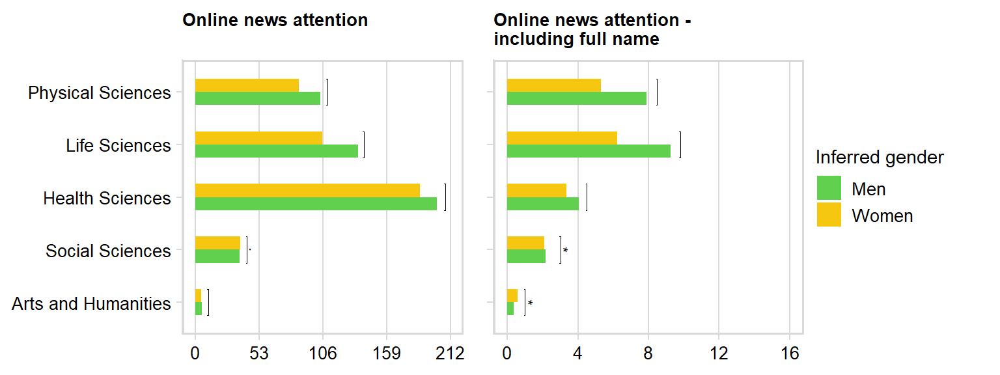
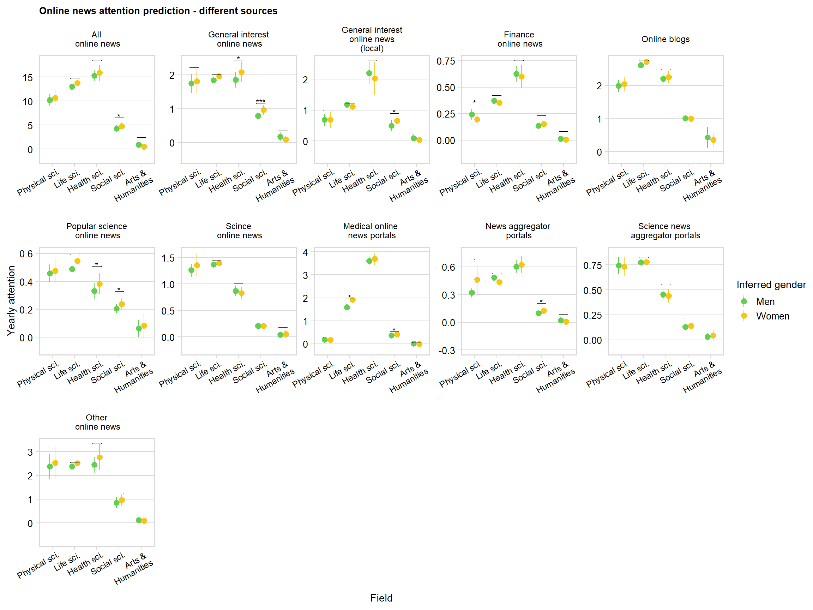
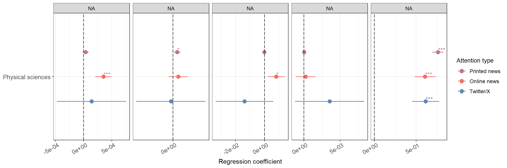
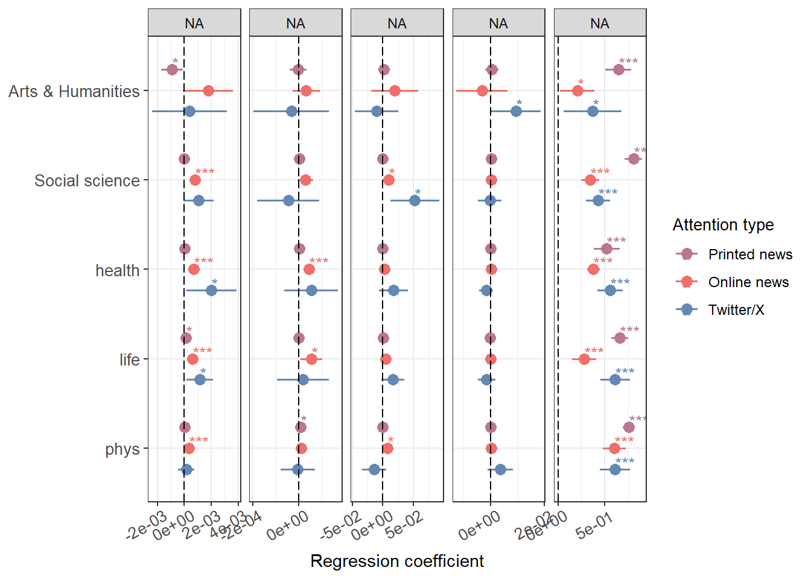
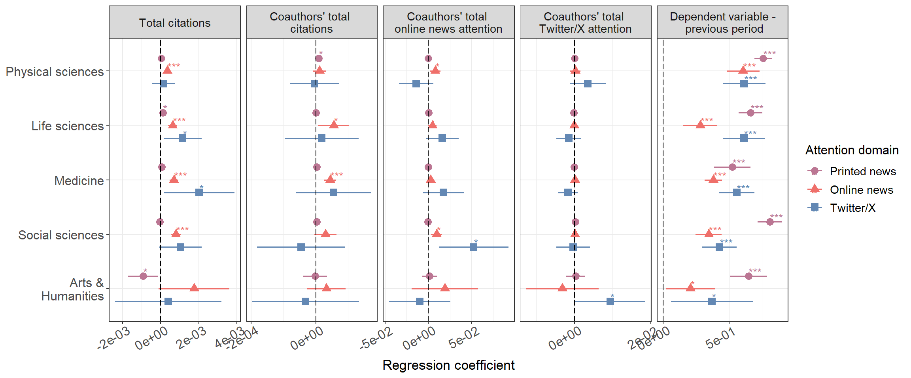

This script produces supplemental analyses referred to in the main
text.
Load the packages:
source("helper_functions.R")
packages_to_load <- c("readr", "dplyr", "tidyr",
"ggplot2", "cowplot",
"tidyverse", "RPostgres",
"lubridate", "lmtest",
"sandwich", "ggpubr",
"knitr", "scales",
"ggeffects", "flextable",
"officer", "DescTools",
"gglorenz", "corrplot")
fpackage_check(packages_to_load)
# For full reproducibility, load the packages with groundhog using the code below instead
# of the fpackage_check function
# library(groundhog)
# groundhog.library(packages_to_load, date = "2024-4-23")
Load the panel:
prof_panel_filter <- read_csv("panel_datasets/prof_panel_final_26_7.csv")
First, get the totals for the last observation for each
professor:
prof_totals <- prof_panel_filter %>%
group_by(profile_id)%>%
filter(year == max(year) & !is.na(scopus_field_overall))
prof_totals$inferred_gender <- as.factor(prof_totals$inferred_gender)
Figure S1: Averages of
online mentions with name
Different online news types comparisons:
fields <- unique(prof_panel_filter$scopus_field_overall)
fields <- fields[!is.na(fields)]
field_comparisons <- data.frame(matrix(NA, ncol = 4, nrow = length(fields)))
for (i in 1:length(fields)){
field <- fields[i]
data <- filter(prof_totals,
scopus_field_overall == field)
field_comparisons[i, 1] <- field
field_comparisons[i, 2] <- nrow(data)
field_comparisons[i, 3] <- round(t.test(alt_online_all_total ~ inferred_gender, data=data, paired=FALSE)$p.value, 5)
field_comparisons[i, 4] <- round(t.test(alt_online_fname_all_total ~ inferred_gender, data=data, paired=FALSE)$p.value, 5)
}
colnames(field_comparisons) <- c("field", "profs", "online_total", "online_names_total")
field_comparisons$comparison <- "ttest"
mean_values_field <- prof_totals %>%
filter(!is.na(scopus_field_overall))%>%
group_by(inferred_gender, scopus_field_overall)%>%
summarise(online_total = mean(alt_online_all_total, na.rm = TRUE),
online_names_total = mean(alt_online_fname_all_total, na.rm = TRUE))%>%
mutate(across(2:3, \(x) round(x, 2)))
#mean_values_field$field <- "overall"
colnames(mean_values_field)[1] <- "comparison"
colnames(mean_values_field)[2] <- "field"
mean_values_field <- mean_values_field[c("comparison", "field", "online_total", "online_names_total")]
field_comparisons <- field_comparisons[c("comparison", "field", "online_total", "online_names_total")]
field_comparisons <- rbind(mean_values_field,
field_comparisons)
field_comparisons <- field_comparisons %>%
arrange(field)
Plot the means comparison:
field_comparisons_plot <- filter(field_comparisons, comparison != "ttest")
field_comparisons_plot$field <- factor(field_comparisons_plot$field,
levels = c("Physical Sciences",
"Life Sciences",
"Health Sciences",
"Social Sciences",
"Arts and Humanities"))
field_comparisons_plot$comparison <- ordered(field_comparisons_plot$comparison,
levels = c("m", "w"))
significance_testing <- field_comparisons
significance_testing <- significance_testing %>%
filter(comparison == "ttest")%>%
mutate_at(vars(`online_total`, `online_names_total`), .funs = list(
~case_when(
. <= 0.001 ~ '***',
. <= 0.01 ~ '**',
. <= 0.05 ~ '*',
. <= 0.1 ~ '.',
. > 0.1 ~ ''
)))
significance_testing$field <- factor(significance_testing$field,
levels = c("Physical Sciences",
"Life Sciences",
"Health Sciences",
"Social Sciences",
"Arts and Humanities"))
significance_testing <- significance_testing %>%
arrange(field)
significance_testing$group1 <- "m"
significance_testing$group2 <- "w"
significance_testing$x <- c(1, 2, 3, 4, 5)
significance_testing$xmin <- c(0.75,1.75,2.75,3.75,4.75)
significance_testing$xmax <- c(1.25,2.25, 3.25,4.25, 5.25)
significance_testing$comparison <- "m"
average_online <- field_comparisons_plot %>%
filter(comparison != "ttest")%>%
ggplot(aes(x=fct_rev(field), y=online_total, fill = comparison)) +
geom_bar(position=position_dodge(.5),stat="identity", alpha=1, width = 0.5)+
guides(fill = guide_legend(reverse = FALSE, title = "Inferred gender"))+
scale_fill_manual(values = c("#61D04F", "#F5C710") , labels = c("Men", "Women"))+
ggtitle("Online news attention\n")+
scale_y_continuous(limits = c(0, 212), breaks = seq(0, 212, by = 53))+
stat_pvalue_manual(
significance_testing,
y.position = c(11, 43, 208, 140, 110),
label.size = 3,
coord.flip = TRUE,
tip.length = 0.005,
label = "{online_total}",
)+
ylab("Average mentions over lifetime")+
labs(color = "Inferred gender")+
theme_minimal_vgrid()+
theme(plot.title = element_text(size = 10),
axis.text.y = element_text(size = 10),
axis.title.y = element_text(size = 11),
axis.text.x = element_text(size = 10) ,
axis.title.x = element_text(size = 11),
legend.title=element_text(size=11),
legend.text=element_text(size=10))+
coord_flip()+
xlab("Field")
average_online_names <- field_comparisons_plot %>%
filter(comparison != "ttest")%>%
ggplot(aes(x=fct_rev(field), y=online_names_total, fill = comparison)) +
geom_bar(position=position_dodge(.5),stat="identity", alpha=1, width = 0.5)+
guides(fill = guide_legend(reverse = FALSE, title = "Inferred gender"))+
scale_fill_manual(values = c("#61D04F", "#F5C710") , labels = c("Men", "Women"))+
ggtitle("Online news attention - \nincluding full name")+
scale_y_continuous(limits = c(0, 16), breaks = seq(0, 16, by = 4))+
stat_pvalue_manual(
significance_testing,
y.position = c(1, 3, 4.5, 9.8, 8.5),
label.size = 3,
coord.flip = TRUE,
tip.length = 0.005,
label = "{online_names_total}",
)+
ylab("Average mentions over lifetime")+
labs(color = "Inferred gender")+
theme_minimal_vgrid()+
theme(plot.title = element_text(size = 10),
axis.text.y = element_text(size = 10),
axis.title.y = element_text(size = 11),
axis.text.x = element_text(size = 10) ,
axis.title.x = element_text(size = 11),
legend.title=element_text(size=11),
legend.text=element_text(size=10))+
coord_flip()+
xlab("Field")
Combine these plots into one (Figure 1, panel A):
legend_average <- get_legend(
# create some space to the left of the legend
average_online
)
combi_plot_averages <- plot_grid(average_online +
theme(legend.position="none",
axis.title.x = element_blank(),
axis.title.y=element_blank())
+ panel_border(),
average_online_names + theme(legend.position="none",
axis.title.x = element_blank(),
axis.title.y=element_blank(),
axis.text.y = element_blank())
+ panel_border(),
legend_average,
ncol = 3,
rel_widths = c(1.55, 1.11, 0.6))
combi_plot_averages

Write this out:
ggsave2(
filename = "results/supplement_figures/online_averages_name.png",
plot = combi_plot_averages,
width = 8,
height = 3,
units = c("in"),
dpi = 600,
bg = "white"
)
Figure S2: Figure 1B
per cohort
Produce a variant of Figure 1B, but per cohort:
First, get representation per field in our dataset: (6791
professors)
repr_field_2023 <- prof_panel_filter %>%
group_by(profile_id)%>%
filter(year == max(year))%>%
filter(!is.na(scopus_field_overall))%>%
group_by(scopus_field_overall, entry_batch_2023, inferred_gender)%>%
summarise(n = n())%>%
pivot_wider(values_from = n, names_from = inferred_gender)
repr_field_2023$share_women_field <- repr_field_2023$w/(repr_field_2023$m+repr_field_2023$w)
Now get the representation of women among the top 10% and 20% of
researchers in terms of total fame in their field in 2023 (based on
their entry batch):
# first, get the latest year in the panel for each prof
women_field_2023 <- prof_panel_filter %>%
group_by(profile_id)%>%
filter(year == max(year))
# and now set the final year as 2023, assuming there was no attention after
# whatever the last year is in the dataset (quite some professors with
# 0 mentions even in this last year, so we want to keep them for correct
# shares)
women_field_2023$year <- 2023
# get their decile based on their total performance within their entry batch
women_field_2023 <- women_field_2023 %>%
filter(!is.na(scopus_field_overall))%>%
select(profile_id, year, inferred_gender, scopus_field_overall, entry_batch_2023, count_pubs_total,
cited_by_total_all, news_all_total, alt_online_all_total, alt_twitter_total)%>%
replace(is.na(.), 0)%>%
group_by(scopus_field_overall, entry_batch_2023)%>%
mutate(`News` = ntile(-news_all_total, 10),
`Online news` = ntile(-alt_online_all_total, 10),
`Twitter` = ntile(-alt_twitter_total, 10))
Get shares of women among top n% scientists per attention domain:
# rearrange the dataset to get counts of women and men in each decile
# then leave only top 10 and 20
share_women_field_2023 <- women_field_2023 %>%
ungroup()%>%
select(profile_id, year, inferred_gender, scopus_field_overall,entry_batch_2023, `News`:`Twitter`)%>%
pivot_longer(`News`:`Twitter`)%>%
group_by(scopus_field_overall, entry_batch_2023, inferred_gender, name, value)%>%
summarise(n = n())%>%
pivot_wider(values_from = n, names_from = inferred_gender)%>%
replace(is.na(.), 0)%>%
group_by(scopus_field_overall, entry_batch_2023, name)%>%
mutate(m = cumsum(m),
w = cumsum(w))%>%
filter(value %in% c(1, 2))
share_women_field_2023$share_women <- share_women_field_2023$w/(share_women_field_2023$m+share_women_field_2023$w)
Combine the field representation with the attention
representation:
repr_field_2023$name <- "overall"
repr_field_2023$value <- 0
repr_field_2023 <- repr_field_2023[c(colnames(share_women_field_2023)[1:5],"share_women_field")]
share_women_field_2023 <- merge(share_women_field_2023,
repr_field_2023[c("scopus_field_overall", "entry_batch_2023", "share_women_field")],
by = c("scopus_field_overall", "entry_batch_2023"))
share_women_field_2023$share_women_field <- ifelse(share_women_field_2023$name == "News",
share_women_field_2023$share_women_field,
NA)
Plot this out:
Top 10%:
share_women_field_2023$scopus_field_overall <- factor(share_women_field_2023$scopus_field_overall,
levels = c("Physical Sciences",
"Life Sciences",
"Health Sciences",
"Social Sciences",
"Arts and Humanities"))
repr_attn_10 <- share_women_field_2023 %>%
filter(value == 1 & name %in% c("News", "Online news", "Twitter"))%>%
ggplot(aes(y=share_women, x=fct_rev(scopus_field_overall))) +
geom_point(aes(shape=name, color=name), position=position_dodge(width=0.5), stat="identity", size = 2.5)+
geom_bar(stat="identity", aes(y=share_women_field, x=scopus_field_overall), alpha=0.2, width = 0.4)+
guides(fill = guide_legend(reverse=TRUE, title = "Measure"))+
scale_color_manual(labels = c("Printed news", "Online news", "Twitter/X"), values = c("#bb7693", "#ef6f6a", "#6388b4"))+
scale_shape_discrete(labels = c("Printed news", "Online news", "Twitter/X"))+
scale_y_continuous(limits = c(0, 0.6), breaks = seq(0, 0.6, by = 0.1))+
coord_flip()+
xlab("")+
ylab("% Women")+
facet_grid(entry_batch_2023 ~ .)+
labs(color = "Attention domain",
shape = "Attention domain")+
ggtitle("Top 10% of attention domains")+
theme_minimal_vgrid()+
theme(plot.title = element_text(size = 10),
axis.text.y = element_text(size = 10),
axis.title.y = element_text(size = 11),
axis.text.x = element_text(size = 10) ,
axis.title.x = element_text(size = 11),
legend.title=element_text(size=11),
legend.text=element_text(size=10))+
panel_border()
repr_attn_20 <- share_women_field_2023 %>%
filter(value == 2 & name %in% c("News", "Online news", "Twitter"))%>%
ggplot(aes(y=share_women, x= fct_rev(scopus_field_overall))) +
geom_point(aes(shape=name, color=name), position=position_dodge(width=0.2), stat="identity", size = 2.5)+
geom_bar(stat="identity", aes(y=share_women_field, x=scopus_field_overall), alpha=0.2, width = 0.4)+
guides(fill = guide_legend(reverse=TRUE, title = "Measure"))+
scale_color_manual(labels = c("Printed news", "Online news", "Twitter/X"), values = c("#bb7693", "#ef6f6a", "#6388b4"))+
scale_shape_discrete(labels = c("Printed news", "Online news", "Twitter/X"))+
scale_y_continuous(limits = c(0, 0.6), breaks = seq(0, 0.6, by = 0.1))+
coord_flip()+
xlab("")+
ylab("% Women")+
facet_grid(entry_batch_2023 ~ .)+
labs(color = "Attention domain",
shape = "Attention domain")+
ggtitle("Top 20% of attention domains")+
theme_minimal_vgrid()+
theme(plot.title = element_text(size = 10),
axis.text.y = element_text(size = 10),
axis.title.y = element_text(size = 11),
axis.text.x = element_text(size = 10) ,
axis.title.x = element_text(size = 11),
legend.title=element_text(size=11),
legend.text=element_text(size=10))+
panel_border()
Within total
attention
Now get the shares of attention given to women compared to their
share in the field:
# first, get the latest year in the panel for each prof
women_field_2023 <- prof_panel_filter %>%
group_by(profile_id)%>%
filter(year == max(year))
# and now set the final year as 2023, assuming there was no attention after
# whatever the last year is in the dataset (quite some professors with
# 0 mentions even in this last year, so we want to keep them for correct
# shares)
women_field_2023$year <- 2023
# get their share based on their total performance within their entry batch
women_field_2023_attn_share <- women_field_2023 %>%
filter(!is.na(scopus_field_overall))%>%
select(profile_id, year, inferred_gender, scopus_field_overall, entry_batch_2023, count_pubs_total,
cited_by_total_all, alt_online_all_total, news_all_total, alt_twitter_total)%>%
replace(is.na(.), 0)%>%
group_by(scopus_field_overall, entry_batch_2023)%>%
summarise(
news_w = sum(news_all_total[inferred_gender == "w"]),
online_w = sum(alt_online_all_total[inferred_gender == "w"]),
twitter_w = sum(alt_twitter_total[inferred_gender == "w"]),
news = sum(news_all_total),
online = sum(alt_online_all_total),
twitter = sum(alt_twitter_total)
)%>%
mutate(`News` = news_w/news,
`Online news` = online_w/online,
`Twitter` = twitter_w/twitter)%>%
select(scopus_field_overall, entry_batch_2023, `News`:`Twitter`)%>%
pivot_longer(`News`:`Twitter`, names_to = "name", values_to = "share_women")
women_field_2023_attn_share$share_women <- ifelse(is.nan(women_field_2023_attn_share$share_women),
0,
women_field_2023_attn_share$share_women)
Combine the field representation with the attention
representation:
share_women_field_2023_attn_share <- merge(women_field_2023_attn_share,
repr_field_2023[c("scopus_field_overall", "entry_batch_2023", "share_women_field")],
by = c("scopus_field_overall", "entry_batch_2023"))
share_women_field_2023_attn_share$share_women_field <- ifelse(share_women_field_2023_attn_share$name == "News",
share_women_field_2023_attn_share$share_women_field,
NA)
Plot this out:
share_women_field_2023_attn_share$scopus_field_overall <- factor(share_women_field_2023_attn_share$scopus_field_overall,
levels = c("Physical Sciences",
"Life Sciences",
"Health Sciences",
"Social Sciences",
"Arts and Humanities"))
repr_attn_share <- share_women_field_2023_attn_share %>%
filter(name %in% c("News", "Online news", "Twitter"))%>%
ggplot(aes(y=share_women, x=fct_rev(scopus_field_overall))) +
geom_point(aes(shape=name, color=name), position=position_dodge(width=0.2), stat="identity", size = 2.5)+
geom_bar(stat="identity", aes(y=share_women_field, x=scopus_field_overall), alpha=0.2, width = 0.4)+
guides(fill = guide_legend(reverse=TRUE, title = "Measure"))+
scale_color_manual(labels = c("Printed news", "Online news", "Twitter/X"), values = c("#bb7693", "#ef6f6a", "#6388b4"))+
scale_shape_discrete(labels = c("Printed news", "Online news", "Twitter/X"))+
scale_y_continuous(limits = c(0, 0.6), breaks = seq(0, 0.6, by = 0.1))+
coord_flip()+
xlab("")+
ylab("% Women")+
facet_grid(entry_batch_2023 ~ .)+
labs(color = "Attention domain",
shape = "Attention domain")+
ggtitle("Total attention")+
theme_minimal_vgrid()+
theme(plot.title = element_text(size = 10),
axis.text.y = element_text(size = 10),
axis.title.y = element_text(size = 11),
axis.text.x = element_text(size = 10) ,
axis.title.x = element_text(size = 11),
legend.title=element_text(size=11),
legend.text=element_text(size=10))+
panel_border()
Combine the plots for Figure 1, panel B:
legend_share <- get_legend(
repr_attn_share
)
combi_plot <- plot_grid(repr_attn_share + theme(legend.position="none",
axis.title.x = element_blank(),
axis.title.y=element_blank(),
strip.text.y = element_blank()),
repr_attn_10 + theme(legend.position="none",
axis.title.x = element_blank(),
axis.title.y=element_blank(),
axis.text.y = element_blank(),
strip.text.y = element_blank()),
repr_attn_20 + theme(legend.position="none",
axis.title.y=element_blank(),
axis.title.x = element_blank(),
axis.text.y = element_blank()),
legend_share,
ncol = 4,
rel_widths = c(1.3, 0.9, 1., 0.4))
combi_plot

Print out Figure 1 in the main text.
ggsave2(
filename = "results/supplement_figures/Figure_1B_cohort.png",
plot = combi_plot,
width = 11,
height = 10,
units = c("in"),
dpi = 600,
bg = "white"
)
Tables S4-S5: Average
numbers of mentions and comparison per gender
T-test
Overall comparison between men and women:
overall_comparisons <- data.frame(matrix(NA, ncol = 4, nrow = 1))
i <- 1
overall_comparisons[i, 1] <- "overall"
overall_comparisons[i, 2] <- round(t.test(news_all_total ~ inferred_gender, data=prof_totals, paired=FALSE)$p.value, 5)
overall_comparisons[i, 3] <- round(t.test(alt_online_all_total ~ inferred_gender, data=prof_totals, paired=FALSE)$p.value, 5)
overall_comparisons[i, 4] <- round(t.test(alt_twitter_total ~ inferred_gender, data=prof_totals, paired=FALSE)$p.value, 5)
colnames(overall_comparisons) <- c("field", "printed_total",
"online_total", "twitter_total")
overall_comparisons$comparison <- "ttest"
mean_values <- prof_totals %>%
group_by(inferred_gender)%>%
filter(!is.na(scopus_field_overall))%>%
summarise(printed_total = mean(news_all_total, na.rm = TRUE),
online_total = mean(alt_online_all_total, na.rm = TRUE),
twitter_total = mean(alt_twitter_total, na.rm = TRUE))%>%
mutate(across(2:4, \(x) round(x, 2)))
mean_values$field <- "overall"
colnames(mean_values)[1] <- "comparison"
mean_values <- mean_values[c("comparison", "field",
"printed_total", "online_total", "twitter_total")]
overall_comparisons <- overall_comparisons[c("comparison", "field",
"printed_total", "online_total",
"twitter_total")]
overall_comparisons <- rbind(mean_values,
overall_comparisons)
overall_comparisons
## # A tibble: 3 × 5
## comparison field printed_total online_total twitter_total
## <fct> <chr> <dbl> <dbl> <dbl>
## 1 m overall 114. 106. 518.
## 2 w overall 76.3 92.8 413.
## 3 ttest overall 0 0.0884 0.0216
Within-field comparison:
fields <- unique(as.character(prof_panel_filter$scopus_field_overall))
fields <- fields[!is.na(fields)]
field_comparisons <- data.frame(matrix(NA, ncol = 5, nrow = length(fields)))
for (i in 1:length(fields)){
field <- fields[i]
data <- filter(prof_totals,
scopus_field_overall == field)
field_comparisons[i, 1] <- field
field_comparisons[i, 2] <- nrow(data)
field_comparisons[i, 3] <- round(t.test(news_all_total ~ inferred_gender, data=data, paired=FALSE)$p.value, 5)
field_comparisons[i, 4] <- round(t.test(alt_online_all_total ~ inferred_gender, data=data, paired=FALSE)$p.value, 5)
field_comparisons[i, 5] <- round(t.test(alt_twitter_total ~ inferred_gender, data=data, paired=FALSE)$p.value, 5)
}
colnames(field_comparisons) <- c("field", "profs",
"printed_total", "online_total", "twitter_total")
field_comparisons$comparison <- "ttest"
mean_values_field <- prof_totals %>%
filter(!is.na(scopus_field_overall))%>%
group_by(inferred_gender, scopus_field_overall)%>%
summarise(printed_total = mean(news_all_total, na.rm = TRUE),
online_total = mean(alt_online_all_total, na.rm = TRUE),
twitter_total = mean(alt_twitter_total, na.rm = TRUE))%>%
mutate(across(2:4, \(x) round(x, 2)))
#mean_values_field$field <- "overall"
colnames(mean_values_field)[1] <- "comparison"
colnames(mean_values_field)[2] <- "field"
mean_values_field <- mean_values_field[c("comparison", "field",
"printed_total", "online_total",
"twitter_total")]
field_comparisons <- field_comparisons[c("comparison", "field",
"printed_total", "online_total",
"twitter_total")]
field_comparisons <- rbind(mean_values_field,
field_comparisons)
field_comparisons$field <- factor(field_comparisons$field,
levels = c("Physical Sciences",
"Life Sciences",
"Health Sciences",
"Social Sciences",
"Arts and Humanities"))
field_comparisons <- field_comparisons %>%
arrange(field)
Within-field and year group comparison:
year_groups <- unique(prof_totals$entry_batch_2023)
year_groups <- year_groups[! year_groups == "up to NA"]
years <- c("up to 10","up to 20", "up to 30", "up to 40", "up to 50")
year_groups <- year_groups[order(match(year_groups,years))]
year_groups_field_comparisons <- data.frame(matrix(NA, ncol = 6, nrow = length(year_groups)*length(fields)))
row_index <- 0
for (i in 1:length(year_groups)){
year_group <- year_groups[i]
for (j in 1:length(fields)){
field <- fields[j]
data <- filter(prof_totals,
years_since_entry == year_group & scopus_field_overall == field)
women <- filter(data, inferred_gender == "w")
men <- filter(data, inferred_gender == "m")
if (length(unique(data$inferred_gender)) != 2){
year_groups_field_comparisons[row_index+j, 1] <- year_group
year_groups_field_comparisons[row_index+j, 2] <- field
year_groups_field_comparisons[row_index+j, 3] <- nrow(data)
year_groups_field_comparisons[row_index+j, 4] <- NA
year_groups_field_comparisons[row_index+j, 5] <- NA
year_groups_field_comparisons[row_index+j, 6] <- NA
}else{
if (length(which(colSums(data[c("alt_online_all_total", "news_all_total", "alt_twitter_total", "cited_by_total_all", "count_pubs_total")]) == 0)) > 0){
year_groups_field_comparisons[row_index+j, 1] <- year_group
year_groups_field_comparisons[row_index+j, 2] <- field
year_groups_field_comparisons[row_index+j, 3] <- nrow(data)
year_groups_field_comparisons[row_index+j, 4] <- NA
year_groups_field_comparisons[row_index+j, 5] <- NA
year_groups_field_comparisons[row_index+j, 6] <- NA
}else{
year_groups_field_comparisons[row_index+j, 1] <- year_group
year_groups_field_comparisons[row_index+j, 2] <- field
year_groups_field_comparisons[row_index+j, 3] <- nrow(data)
year_groups_field_comparisons[row_index+j, 4] <- try(round(t.test(news_all_total ~ inferred_gender, data=data, paired=FALSE)$p.value, 5))
year_groups_field_comparisons[row_index+j, 5] <- try(round(t.test(alt_online_all_total ~ inferred_gender, data=data, paired=FALSE)$p.value, 5))
year_groups_field_comparisons[row_index+j, 6] <- try(round(t.test(alt_twitter_total ~ inferred_gender, data=data, paired=FALSE)$p.value, 5))
}
}
}
row_index <- row_index + 5
}
## Error in t.test.default(x = DATA[[1L]], y = DATA[[2L]], ...) :
## not enough 'y' observations
## Error in t.test.default(x = DATA[[1L]], y = DATA[[2L]], ...) :
## not enough 'y' observations
## Error in t.test.default(x = DATA[[1L]], y = DATA[[2L]], ...) :
## not enough 'y' observations
colnames(year_groups_field_comparisons) <- c("year_group", "field", "profs",
"printed_total", "online_total",
"twitter_total")
year_groups_field_comparisons$comparison <- "ttest"
mean_values_year_field <- prof_totals %>%
filter(!is.na(scopus_field_overall))%>%
group_by(inferred_gender, entry_batch_2023, scopus_field_overall)%>%
summarise(printed_total = mean(news_all_total, na.rm = TRUE),
online_total = mean(alt_online_all_total, na.rm = TRUE),
twitter_total = mean(alt_twitter_total, na.rm = TRUE))%>%
mutate(across(2:4, \(x) round(x, 2)))
colnames(mean_values_year_field)[1] <- "comparison"
colnames(mean_values_year_field)[2] <- "year_group"
colnames(mean_values_year_field)[3] <- "field"
mean_values_year_field <- mean_values_year_field[c("comparison", "year_group", "field", "printed_total",
"online_total", "twitter_total")]
year_groups_field_comparisons <- year_groups_field_comparisons[c("comparison", "year_group","field",
"printed_total", "online_total", "twitter_total")]
year_groups_field_comparisons[1, 4:6] <- NaN
year_groups_field_comparisons$printed_total <- as.numeric(year_groups_field_comparisons$printed_total)
year_groups_field_comparisons$online_total <- as.numeric(year_groups_field_comparisons$online_total)
year_groups_field_comparisons$twitter_total <- as.numeric(year_groups_field_comparisons$twitter_total)
year_groups_field_comparisons <- rbind(mean_values_year_field,
year_groups_field_comparisons)
year_groups_field_comparisons$field <- factor(year_groups_field_comparisons$field,
levels = c("Physical Sciences",
"Life Sciences",
"Health Sciences",
"Social Sciences",
"Arts and Humanities"))
year_groups_field_comparisons <- year_groups_field_comparisons %>%
arrange(year_group, field)
Rearrange the tables for writing out:
overall_comparisons_out <- overall_comparisons %>%
pivot_wider(
names_from = comparison,
values_from = c(printed_total, online_total, twitter_total)
)%>%
mutate_at(vars(`online_total_ttest`, `printed_total_ttest`, `twitter_total_ttest`), .funs = list(
~case_when(
. <= 0.001 ~ '***',
. <= 0.01 ~ '**',
. <= 0.05 ~ '*',
. <= 0.1 ~ '.',
. > 0.1 ~ ''
)
))
field_comparisons_out <- field_comparisons %>%
pivot_wider(
names_from = comparison,
values_from = c(printed_total, online_total, twitter_total)
)%>%
mutate_at(vars(`online_total_ttest`, `printed_total_ttest`, `twitter_total_ttest`), .funs = list(
~case_when(
. <= 0.001 ~ '***',
. <= 0.01 ~ '**',
. <= 0.05 ~ '*',
. <= 0.1 ~ '.',
. > 0.1 ~ ''
)
))
field_comparisons_out$field <- ordered(field_comparisons_out$field,
levels = c("Physical Sciences",
"Life Sciences",
"Health Sciences",
"Social Sciences",
"Arts and Humanities"))
field_comparisons_out <- field_comparisons_out %>%
arrange(field)
year_groups_field_comparisons_out <- year_groups_field_comparisons %>%
filter(!is.na(printed_total))%>%
pivot_wider(
names_from = comparison,
values_from = c(printed_total, online_total, twitter_total)
)%>%
mutate_at(vars(`online_total_ttest`, `printed_total_ttest`, `twitter_total_ttest`), .funs = list(
~case_when(
. <= 0.001 ~ '***',
. <= 0.01 ~ '**',
. <= 0.05 ~ '*',
. <= 0.1 ~ '.',
. > 0.1 ~ ''
)
))
year_groups_field_comparisons_out$field <- ordered(year_groups_field_comparisons_out$field,
levels = c("Physical Sciences",
"Life Sciences",
"Health Sciences",
"Social Sciences",
"Arts and Humanities"))
year_groups_field_comparisons_out <- year_groups_field_comparisons_out %>%
select(field, year_group, printed_total_m:twitter_total_ttest)%>%
arrange(field, year_group)
## write this out
write_csv(overall_comparisons_out, "results/supplement_tables/table_s1_a.csv")
write_csv(field_comparisons_out, "results/supplement_tables/table_s1_b.csv")
write_csv(year_groups_field_comparisons_out, "results/supplement_tables/table_s2.csv")
Tables S6-S7: Source
breakdown
News source breakdown
per field
prof_totals$scopus_field_overall <- ordered(prof_totals$scopus_field_overall,
levels = c("Physical Sciences",
"Life Sciences",
"Health Sciences",
"Social Sciences",
"Arts and Humanities"))
# t-test for average number of mentions per resource
t_test_breakdown_news <- prof_totals %>%
select(inferred_gender, scopus_field_overall, news_all_total,news_national_total,
news_regional_total, news_intl_total, news_local_intl_total,
news_intl_other_total, news_finance_total,news_professional_total,
news_science_total, news_blog_total, news_aggr_total,
news_unknown_total, news_other_total)%>%
pivot_longer(news_all_total:news_other_total)
t_test_breakdown_news$name <- ordered(t_test_breakdown_news$name,
levels = c("news_all_total",
"news_national_total",
"news_regional_total",
"news_intl_total",
"news_local_intl_total",
"news_intl_other_total",
"news_finance_total",
"news_professional_total",
"news_science_total",
"news_blog_total",
"news_aggr_total",
"news_unknown_total",
"news_other_total"))
t_test_breakdown_news <- t_test_breakdown_news %>%
group_by(scopus_field_overall, name) %>%
group_map(~ t.test(value ~ inferred_gender, .x, paired = FALSE))
# extract the p-values
p_values_news <- round(unlist(lapply(t_test_breakdown_news, function(x) x[names(x) == "p.value"])), 3)
source_breakdown <- prof_totals %>%
filter(!is.na(scopus_field_overall))%>%
group_by(inferred_gender, scopus_field_overall)%>%
summarise(
n_total = n(),
national_total = sum(news_national_total, na.rm = TRUE),
regional_total = sum(news_regional_total, na.rm = TRUE),
intl_total = sum(news_intl_total, na.rm = TRUE),
intllocal_total = sum(news_local_intl_total, na.rm = TRUE),
intlother_total = sum(news_intl_other_total, na.rm = TRUE),
finance_total = sum(news_finance_total, na.rm = TRUE),
prof_total = sum(news_professional_total, na.rm = TRUE),
sci_total = sum(news_science_total, na.rm = TRUE),
blog_total = sum(news_blog_total, na.rm = TRUE),
aggr_total = sum(news_aggr_total, na.rm = TRUE),
unknown_total = sum(news_unknown_total, na.rm = TRUE),
other_total = sum(news_other_total, na.rm = TRUE),
total_total = sum(news_all_total, na.rm = TRUE),
national_ave = mean(news_national_total, na.rm = TRUE),
regional_ave = mean(news_regional_total, na.rm = TRUE),
intl_ave = mean(news_intl_total, na.rm = TRUE),
intllocal_ave = mean(news_local_intl_total, na.rm = TRUE),
intlother_ave = mean(news_intl_other_total, na.rm = TRUE),
finance_ave = mean(news_finance_total, na.rm = TRUE),
prof_ave = mean(news_professional_total, na.rm = TRUE),
sci_ave = mean(news_science_total, na.rm = TRUE),
blog_ave = mean(news_blog_total, na.rm = TRUE),
aggr_ave = mean(news_aggr_total, na.rm = TRUE),
unknown_ave = mean(news_unknown_total, na.rm = TRUE),
other_ave = mean(news_other_total, na.rm = TRUE),
total_ave = mean(news_all_total, na.rm = TRUE))%>%
mutate(across(contains('_ave'), \(x) round(x, 2)))
source_breakdown$national_share <- source_breakdown$national_total/source_breakdown$total_total
source_breakdown$regional_share <- source_breakdown$regional_total/source_breakdown$total_total
source_breakdown$intl_share <- source_breakdown$intl_total/source_breakdown$total_total
source_breakdown$intllocal_share <- source_breakdown$intllocal_total/source_breakdown$total_total
source_breakdown$intlother_share <- source_breakdown$intlother_total/source_breakdown$total_total
source_breakdown$finance_share <- source_breakdown$finance_total/source_breakdown$total_total
source_breakdown$prof_share <- source_breakdown$prof_total/source_breakdown$total_total
source_breakdown$sci_share <- source_breakdown$sci_total/source_breakdown$total_total
source_breakdown$blog_share <- source_breakdown$blog_total/source_breakdown$total_total
source_breakdown$aggr_share <- source_breakdown$aggr_total/source_breakdown$total_total
source_breakdown$unknown_share <- source_breakdown$unknown_total/source_breakdown$total_total
source_breakdown$other_share <- source_breakdown$other_total/source_breakdown$total_total
source_breakdown$total_share <- source_breakdown$total_total/source_breakdown$total_total
source_breakdown_news <- source_breakdown %>%
pivot_longer(national_total:total_share,
names_to = c('news_type', '.value'),
names_pattern = '(.*?)_(.*)')%>%
select(scopus_field_overall, inferred_gender,news_type, n_total, total:share)%>%
mutate(across(5:6, \(x) round(x, 2)))%>%
pivot_wider(
names_from = inferred_gender,
values_from = c(n_total:share)
)%>%
arrange(scopus_field_overall)
# arrange the news types
source_breakdown_news$news_type <- factor(source_breakdown_news$news_type,
levels = c("total",
"national",
"regional",
"intl",
"intllocal",
"intlother",
"finance",
"prof",
"sci",
"blog",
"aggr",
"unknown",
"other"))
source_breakdown_news <- source_breakdown_news %>%
arrange(scopus_field_overall, news_type)
# add in the p-values of men/women comparisons
source_breakdown_news$p_value <- p_values_news
source_breakdown_news <- source_breakdown_news %>%
mutate(news_type = recode(news_type,
`total` = "All printed news",
`national` = "National news (NL)",
`regional` = "Local news (NL)",
`intl` = "International news (top outlets)",
`intllocal` = "International news (local)",
`intlother` = "International news (other)",
`finance` = "Financial news",
`prof` = "Professional news",
`sci` = "Science news",
`blog` = "Blogs",
`aggr` = "News aggregators",
`unknown` = "Unknown",
`other` = "Other news"),
p_sig = case_when(
p_value <= 0.001 ~ '***',
p_value <= 0.01 ~ '**',
p_value <= 0.05 ~ '*',
p_value <= 0.1 ~ '.',
p_value > 0.1 ~ '' ))%>%
select(scopus_field_overall:ave_w, p_sig, share_m:share_w)
## write this out
write_csv(source_breakdown_news, "results/supplement_tables/source_breakdown_news.csv")
Online news source
breakdown per field
# t-test for average number of mentions per resource
t_test_breakdown_online_news <- prof_totals %>%
select(inferred_gender, scopus_field_overall, alt_online_all_total,
alt_general_interest_news_total,alt_general_interest_local_news_total,
alt_finance_news_total, alt_online_blog_total,
alt_popsci_news_total, alt_medical_news_total,
alt_science_news_total, alt_sci_news_aggregator_total,
alt_news_aggregator_total, alt_other_news_total)%>%
pivot_longer(alt_online_all_total:alt_other_news_total)
t_test_breakdown_online_news$name <- ordered(t_test_breakdown_online_news$name,
levels = c("alt_online_all_total",
"alt_general_interest_news_total",
"alt_general_interest_local_news_total",
"alt_finance_news_total",
"alt_online_blog_total",
"alt_popsci_news_total",
"alt_medical_news_total",
"alt_science_news_total",
"alt_sci_news_aggregator_total",
"alt_news_aggregator_total",
"alt_other_news_total"))
t_test_breakdown_online_news <- t_test_breakdown_online_news %>%
group_by(scopus_field_overall, name) %>%
group_map(~ t.test(value ~ inferred_gender, .x, paired = FALSE))
# extract the p-values
p_values_online_news <- round(unlist(lapply(t_test_breakdown_online_news, function(x) x[names(x) == "p.value"])), 3)
source_breakdown <- prof_totals %>%
filter(!is.na(scopus_field_overall))%>%
group_by(inferred_gender, scopus_field_overall)%>%
summarise(
n_total = n(),
all_total = sum(alt_online_all_total, na.rm = TRUE),
gen_total = sum(alt_general_interest_news_total, na.rm = TRUE),
local_total = sum(alt_general_interest_local_news_total, na.rm = TRUE),
finance_total = sum(alt_finance_news_total, na.rm = TRUE),
blogs_total = sum(alt_online_blog_total, na.rm = TRUE),
popsci_total = sum(alt_popsci_news_total, na.rm = TRUE),
medical_total = sum(alt_medical_news_total, na.rm = TRUE),
sci_total = sum(alt_science_news_total, na.rm = TRUE),
scaggr_total = sum(alt_sci_news_aggregator_total, na.rm = TRUE),
aggr_total = sum(alt_news_aggregator_total, na.rm = TRUE),
other_total = sum(alt_other_news_total, na.rm = TRUE),
all_ave = mean(alt_online_all_total, na.rm = TRUE),
gen_ave = mean(alt_general_interest_news_total, na.rm = TRUE),
local_ave = mean(alt_general_interest_local_news_total, na.rm = TRUE),
finance_ave = mean(alt_finance_news_total, na.rm = TRUE),
blogs_ave = mean(alt_online_blog_total, na.rm = TRUE),
popsci_ave = mean(alt_popsci_news_total, na.rm = TRUE),
medical_ave = mean(alt_medical_news_total, na.rm = TRUE),
sci_ave = mean(alt_science_news_total, na.rm = TRUE),
scaggr_ave = mean(alt_sci_news_aggregator_total, na.rm = TRUE),
aggr_ave = mean(alt_news_aggregator_total, na.rm = TRUE),
other_ave = mean(alt_other_news_total, na.rm = TRUE))%>%
mutate(across(contains('_ave'), \(x) round(x, 2)))
source_breakdown$all_share <- source_breakdown$all_total/source_breakdown$all_total
source_breakdown$gen_share <- source_breakdown$gen_total/source_breakdown$all_total
source_breakdown$local_share <- source_breakdown$local_total/source_breakdown$all_total
source_breakdown$finance_share <- source_breakdown$finance_total/source_breakdown$all_total
source_breakdown$blogs_share <- source_breakdown$blogs_total/source_breakdown$all_total
source_breakdown$popsci_share <- source_breakdown$popsci_total/source_breakdown$all_total
source_breakdown$medical_share <- source_breakdown$medical_total/source_breakdown$all_total
source_breakdown$sci_share <- source_breakdown$sci_total/source_breakdown$all_total
source_breakdown$scaggr_share <- source_breakdown$scaggr_total/source_breakdown$all_total
source_breakdown$aggr_share <- source_breakdown$aggr_total/source_breakdown$all_total
source_breakdown$other_share <- source_breakdown$other_total/source_breakdown$all_total
source_breakdown_online_news <- source_breakdown %>%
pivot_longer(all_total:other_share,
names_to = c('news_type', '.value'),
names_pattern = '(.*?)_(.*)')%>%
select(scopus_field_overall, inferred_gender,news_type, n_total, total:share)%>%
mutate(across(5:6, \(x) round(x, 2)))%>%
pivot_wider(
names_from = inferred_gender,
values_from = c(n_total:share)
)%>%
arrange(scopus_field_overall)
# arrange the news types
source_breakdown_online_news$news_type <- ordered(source_breakdown_online_news$news_type,
levels = c("all",
"gen",
"local",
"finance",
"blogs",
"popsci",
"medical",
"sci",
"scaggr",
"aggr",
"other"))
source_breakdown_online_news <- source_breakdown_online_news %>%
arrange(scopus_field_overall, news_type)
# add in the p-values of men/women comparisons
source_breakdown_online_news$p_value <- p_values_online_news
source_breakdown_online_news <- source_breakdown_online_news %>%
mutate(news_type = recode(news_type,
`all` = "All online news",
`name` = "Containing professors' names",
`gen` = "General interest news",
`local` = "General interest news (local)",
`finance` = "Financial news",
`blogs` = "Online blogs",
`popsci` = "Popular science news",
`medical` = "Medial news",
`sci` = "Science news",
`scaggr` = "Science news aggregators",
`aggr` = "News aggregators",
`other` = "Other news"),
p_sig = case_when(
p_value <= 0.001 ~ '***',
p_value <= 0.01 ~ '**',
p_value <= 0.05 ~ '*',
p_value <= 0.1 ~ '.',
p_value > 0.1 ~ '' ))%>%
select(scopus_field_overall:ave_w, p_sig, share_m:share_w)
# write this out
write_csv(source_breakdown_online_news, "results/supplement_tables/source_breakdown_online_news.csv")
Online news source
breakdown per field - name mentions
# t-test for average number of mentions per resource
t_test_breakdown_online_news_name <- prof_totals %>%
select(profile_id,inferred_gender, scopus_field_overall, alt_online_fname_all_total,
alt_fname_general_interest_news_total,alt_fname_general_interest_local_news_total,
alt_fname_finance_news_total, alt_fname_online_blog_total,
alt_fname_popsci_news_total, alt_fname_medical_news_total,
alt_fname_science_news_total, alt_fname_sci_news_aggregator_total,
alt_fname_news_aggregator_total, alt_fname_other_news_total)%>%
pivot_longer(alt_online_fname_all_total:alt_fname_other_news_total)
t_test_breakdown_online_news_name$name <- ordered(t_test_breakdown_online_news_name$name,
levels = c("alt_online_fname_all_total",
"alt_fname_general_interest_news_total",
"alt_fname_general_interest_local_news_total",
"alt_fname_finance_news_total",
"alt_fname_online_blog_total",
"alt_fname_popsci_news_total",
"alt_fname_medical_news_total",
"alt_fname_science_news_total",
"alt_fname_sci_news_aggregator_total",
"alt_fname_news_aggregator_total",
"alt_fname_other_news_total"))
t_test_breakdown_online_news_name <- t_test_breakdown_online_news_name %>%
group_by(scopus_field_overall, name) %>%
group_map(~ t.test(value ~ inferred_gender, .x, paired = FALSE))
# extract the p-values
p_values_online_news_name <- round(unlist(lapply(t_test_breakdown_online_news_name, function(x) x[names(x) == "p.value"])), 3)
source_breakdown_name <- prof_totals %>%
filter(!is.na(scopus_field_overall))%>%
group_by(inferred_gender, scopus_field_overall)%>%
summarise(
n_total = n(),
all_total = sum(alt_online_fname_all_total, na.rm = TRUE),
gen_total = sum(alt_fname_general_interest_news_total, na.rm = TRUE),
local_total = sum(alt_fname_general_interest_local_news_total, na.rm = TRUE),
finance_total = sum(alt_fname_finance_news_total, na.rm = TRUE),
blogs_total = sum(alt_fname_online_blog_total, na.rm = TRUE),
popsci_total = sum(alt_fname_popsci_news_total, na.rm = TRUE),
medical_total = sum(alt_fname_medical_news_total, na.rm = TRUE),
sci_total = sum(alt_fname_science_news_total, na.rm = TRUE),
scaggr_total = sum(alt_fname_sci_news_aggregator_total, na.rm = TRUE),
aggr_total = sum(alt_fname_news_aggregator_total, na.rm = TRUE),
other_total = sum(alt_fname_other_news_total, na.rm = TRUE),
all_ave = mean(alt_online_fname_all_total, na.rm = TRUE),
gen_ave = mean(alt_fname_general_interest_news_total, na.rm = TRUE),
local_ave = mean(alt_fname_general_interest_local_news_total, na.rm = TRUE),
finance_ave = mean(alt_fname_finance_news_total, na.rm = TRUE),
blogs_ave = mean(alt_fname_online_blog_total, na.rm = TRUE),
popsci_ave = mean(alt_fname_popsci_news_total, na.rm = TRUE),
medical_ave = mean(alt_fname_medical_news_total, na.rm = TRUE),
sci_ave = mean(alt_fname_science_news_total, na.rm = TRUE),
scaggr_ave = mean(alt_fname_sci_news_aggregator_total, na.rm = TRUE),
aggr_ave = mean(alt_fname_news_aggregator_total, na.rm = TRUE),
other_ave = mean(alt_fname_other_news_total, na.rm = TRUE))%>%
mutate(across(contains('_ave'), \(x) round(x, 2)))
source_breakdown_name$all_share <- source_breakdown_name$all_total/source_breakdown_name$all_total
source_breakdown_name$gen_share <- source_breakdown_name$gen_total/source_breakdown_name$all_total
source_breakdown_name$local_share <- source_breakdown_name$local_total/source_breakdown_name$all_total
source_breakdown_name$finance_share <- source_breakdown_name$finance_total/source_breakdown_name$all_total
source_breakdown_name$blogs_share <- source_breakdown_name$blogs_total/source_breakdown_name$all_total
source_breakdown_name$popsci_share <- source_breakdown_name$popsci_total/source_breakdown_name$all_total
source_breakdown_name$medical_share <- source_breakdown_name$medical_total/source_breakdown_name$all_total
source_breakdown_name$sci_share <- source_breakdown_name$sci_total/source_breakdown_name$all_total
source_breakdown_name$scaggr_share <- source_breakdown_name$scaggr_total/source_breakdown_name$all_total
source_breakdown_name$aggr_share <- source_breakdown_name$aggr_total/source_breakdown_name$all_total
source_breakdown_name$other_share <- source_breakdown_name$other_total/source_breakdown_name$all_total
source_breakdown_online_news_name <- source_breakdown_name %>%
pivot_longer(all_total:other_share,
names_to = c('news_type', '.value'),
names_pattern = '(.*?)_(.*)')%>%
select(scopus_field_overall, inferred_gender,news_type, n_total, total:share)%>%
mutate(across(5:6, \(x) round(x, 2)))%>%
pivot_wider(
names_from = inferred_gender,
values_from = c(n_total:share)
)%>%
arrange(scopus_field_overall)
# arrange the news types
source_breakdown_online_news_name$news_type <- ordered(source_breakdown_online_news_name$news_type,
levels = c("all",
"gen",
"local",
"finance",
"blogs",
"popsci",
"medical",
"sci",
"scaggr",
"aggr",
"other"))
source_breakdown_online_news_name <- source_breakdown_online_news_name %>%
arrange(scopus_field_overall, news_type)
# add in the p-values of men/women comparisons
source_breakdown_online_news_name$p_value <- p_values_online_news_name
source_breakdown_online_news_name <- source_breakdown_online_news_name %>%
mutate(news_type = recode(news_type,
`all` = "All online news",
`name` = "Containing professors' names",
`gen` = "General interest news",
`local` = "General interest news (local)",
`finance` = "Financial news",
`blogs` = "Online blogs",
`popsci` = "Popular science news",
`medical` = "Medial news",
`sci` = "Science news",
`scaggr` = "Science news aggregators",
`aggr` = "News aggregators",
`other` = "Other news"),
p_sig = case_when(
p_value <= 0.001 ~ '***',
p_value <= 0.01 ~ '**',
p_value <= 0.05 ~ '*',
p_value <= 0.1 ~ '.',
p_value > 0.1 ~ '' ))%>%
select(scopus_field_overall:ave_w, p_sig, share_m:share_w)
# write this out
write_csv(source_breakdown_online_news_name, "results/supplement_tables/source_breakdown_online_news_names.csv")
Table S8: Share online
mentions with name per field
For this, we need to get the shares among the mentions for which we
did retrieve the full text.
First, get these data:
# fill in own credentials
port <- 5432
user <- "postgres"
password <- "dutchmediaprofssql"
database_name <- "postgres"
con <- dbConnect(Postgres(),
dbname= database_name,
port = port,
user = user,
password = password)
con # Checks connection is working
## <PqConnection> postgres@localhost:5432
altmetric_prepared <- dbReadTable(con, "altmetric_att_prepared")
content_altmetric <- dbGetQuery(con, "select \"url\" from pub_att_news_full_text where \"response\"='200'")
# content found?
altmetric_prepared$content_found <- ifelse(altmetric_prepared$url %in% content_altmetric$url, TRUE, FALSE)
# merge with professor gender
prof_gender <- dbReadTable(con, "gender_table")
Compile the counts we need:
# get a year from the "posted on" string
altmetric_prepared$year <- year(as_date(altmetric_prepared$posted_on))
prof_year_attention_online <- altmetric_prepared %>%
# filter out those without any text...
filter(year >= 2011 & year <= 2023 & content_found == TRUE)%>%
group_by(profile_id, source_type, year)%>%
summarise(alt_attn = n())%>%
arrange(profile_id, source_type, year)%>%
pivot_wider(names_from = source_type, values_from = c(alt_attn))%>%
replace(is.na(.), 0)%>%
arrange(profile_id, year)
colnames(prof_year_attention_online)[-c(1:2)] <- paste0("alt_", colnames(prof_year_attention_online)[-c(1:2)])
# rearrange to match the column order of the other dataframe above
prof_year_attention_online <- prof_year_attention_online[c("profile_id", "year", "alt_news_aggregator", "alt_online_blog", "alt_sci_news_aggregator" , "alt_finance_news" , "alt_general_interest_local_news", "alt_general_interest_news", "alt_medical_news", "alt_other_news", "alt_popsci_news", "alt_science_news")]
## those where we have names last included:
prof_year_attention_online_names <- altmetric_prepared %>%
filter(year >= 2011 & year <= 2023 & last_name_mention == TRUE & content_found == TRUE)%>%
group_by(profile_id, source_type, year)%>%
summarise(alt_attn = n())%>%
arrange(profile_id, source_type, year)%>%
pivot_wider(names_from = source_type, values_from = c(alt_attn))%>%
replace(is.na(.), 0)%>%
arrange(profile_id, year)
colnames(prof_year_attention_online_names)[-c(1:2)] <- paste0("alt_name_", colnames(prof_year_attention_online_names)[-c(1:2)])
# rearrange to match the column order of the other dataframe above
prof_year_attention_online_names <- prof_year_attention_online_names[c("profile_id", "year", "alt_name_news_aggregator", "alt_name_online_blog", "alt_name_sci_news_aggregator" , "alt_name_finance_news" , "alt_name_general_interest_local_news", "alt_name_general_interest_news", "alt_name_medical_news", "alt_name_other_news", "alt_name_popsci_news", "alt_name_science_news")]
## And for the full name included:
prof_year_attention_online_full_names <- altmetric_prepared %>%
filter(year >= 2011 & year <= 2023 & first_last_mention == TRUE & content_found == TRUE)%>%
group_by(profile_id, source_type, year)%>%
summarise(alt_attn = n())%>%
arrange(profile_id, source_type, year)%>%
pivot_wider(names_from = source_type, values_from = c(alt_attn))%>%
replace(is.na(.), 0)%>%
arrange(profile_id, year)
colnames(prof_year_attention_online_full_names)[-c(1:2)] <- paste0("alt_fname_", colnames(prof_year_attention_online_full_names)[-c(1:2)])
# rearrange to match the column order of the other dataframe above
prof_year_attention_online_full_names <- prof_year_attention_online_full_names[c("profile_id", "year", "alt_fname_news_aggregator", "alt_fname_online_blog", "alt_fname_sci_news_aggregator" , "alt_fname_finance_news" , "alt_fname_general_interest_local_news", "alt_fname_general_interest_news", "alt_fname_medical_news", "alt_fname_other_news", "alt_fname_popsci_news", "alt_fname_science_news")]
prof_year_attention_online <- merge(prof_year_attention_online,
prof_year_attention_online_names,
by = c("profile_id", "year"),
all.x = TRUE)
prof_year_attention_online <- merge(prof_year_attention_online,
prof_year_attention_online_full_names,
by = c("profile_id", "year"),
all.x = TRUE)
# get the cumulatives
# As Altmetric data goes back to 2011 in principle, set attention to 0 if year >= 2011, leave as NA
# otherwise:
prof_year_attention_online_total <- prof_year_attention_online %>%
arrange(profile_id, year)%>%
mutate_at(vars(contains('alt_')), ~ifelse(is.na(.), 0, .))%>%
group_by(profile_id)%>%
mutate(across(alt_news_aggregator:alt_fname_science_news, ~cumsum(.x), .names = "{col}_total"))%>%
mutate_at(vars(contains('alt_')), ~ifelse(. == 0 & year < 2011, NA, .))
# and get the final years for further analysis
prof_year_attention_online_total <- merge(prof_year_attention_online_total,
prof_totals[c("profile_id", "scopus_field_overall")],
by = "profile_id",
all.x = TRUE)
## totals
prof_year_attention_online_total$alt_online_all <- rowSums(prof_year_attention_online_total[,c("alt_news_aggregator",
"alt_online_blog",
"alt_sci_news_aggregator",
"alt_finance_news",
"alt_general_interest_local_news",
"alt_general_interest_news",
"alt_medical_news",
"alt_other_news",
"alt_popsci_news",
"alt_science_news")])
prof_year_attention_online_total$alt_name_online_all <- rowSums(prof_year_attention_online_total[,c("alt_name_news_aggregator",
"alt_name_online_blog",
"alt_name_sci_news_aggregator",
"alt_name_finance_news",
"alt_name_general_interest_local_news",
"alt_name_general_interest_news",
"alt_name_medical_news",
"alt_name_other_news",
"alt_name_popsci_news",
"alt_name_science_news")])
prof_year_attention_online_total$alt_online_fname_all <- rowSums(prof_year_attention_online_total[,c("alt_fname_news_aggregator",
"alt_fname_online_blog",
"alt_fname_sci_news_aggregator",
"alt_fname_finance_news",
"alt_fname_general_interest_local_news",
"alt_fname_general_interest_news",
"alt_fname_medical_news",
"alt_fname_other_news",
"alt_fname_popsci_news",
"alt_fname_science_news")])
prof_year_attention_online_total$alt_online_all_total <- rowSums(prof_year_attention_online_total[,c("alt_news_aggregator_total",
"alt_online_blog_total",
"alt_sci_news_aggregator_total",
"alt_finance_news_total",
"alt_general_interest_local_news_total",
"alt_general_interest_news_total",
"alt_medical_news_total",
"alt_other_news_total",
"alt_popsci_news_total",
"alt_science_news_total")])
prof_year_attention_online_total$alt_online_name_all_total <- rowSums(prof_year_attention_online_total[,c("alt_name_news_aggregator_total",
"alt_name_online_blog_total",
"alt_name_sci_news_aggregator_total",
"alt_name_finance_news_total",
"alt_name_general_interest_local_news_total",
"alt_name_general_interest_news_total",
"alt_name_medical_news_total",
"alt_name_other_news_total",
"alt_name_popsci_news_total",
"alt_name_science_news_total")])
prof_year_attention_online_total$alt_online_fname_all_total <- rowSums(prof_year_attention_online_total[,c("alt_fname_news_aggregator_total",
"alt_fname_online_blog_total",
"alt_fname_sci_news_aggregator_total",
"alt_fname_finance_news_total",
"alt_fname_general_interest_local_news_total",
"alt_fname_general_interest_news_total",
"alt_fname_medical_news_total",
"alt_fname_other_news_total",
"alt_fname_popsci_news_total",
"alt_fname_science_news_total")])
prof_year_attention_online_total <- merge(prof_year_attention_online_total,
prof_gender[c("profile_id", "inferred_gender")],
by = "profile_id",
all.x = TRUE)
Get the final year:
prof_totals_online <- prof_year_attention_online_total %>%
group_by(profile_id)%>%
filter(year == max(year) & !is.na(scopus_field_overall))
Now, get the proportions of mentions that contain name mentions as
well:
online_mentions <- prof_totals_online %>%
filter(!is.na(scopus_field_overall) & alt_online_all_total > 0)%>%
group_by(inferred_gender, scopus_field_overall) %>%
bind_rows(., prof_totals_online %>% filter(!is.na(scopus_field_overall) & alt_online_all_total > 0)%>% mutate(scopus_field_overall = as.character("All"))) %>%
summarise(
n_total = n(),
all_total = sum(alt_online_all_total, na.rm = TRUE))
online_mentions_name <- prof_totals_online %>%
filter(!is.na(scopus_field_overall) & alt_online_name_all_total > 0)%>%
group_by(inferred_gender, scopus_field_overall) %>%
bind_rows(., prof_totals_online %>% filter(!is.na(scopus_field_overall) & alt_online_name_all_total > 0)%>% mutate(scopus_field_overall = as.character("All"))) %>%
summarise(
n_name_total = n(),
all_name_total = sum(alt_online_name_all_total, na.rm = TRUE))
online_mentions_fname <- prof_totals_online %>%
filter(!is.na(scopus_field_overall) & alt_online_fname_all_total > 0)%>%
group_by(inferred_gender, scopus_field_overall) %>%
bind_rows(., prof_totals_online %>% filter(!is.na(scopus_field_overall) & alt_online_fname_all_total > 0)%>% mutate(scopus_field_overall = as.character("All"))) %>%
summarise(
n_fname_total = n(),
all_fname_total = sum(alt_online_fname_all_total, na.rm = TRUE))
online_mentions_combi <- merge(online_mentions,
online_mentions_name,
by = c("inferred_gender", "scopus_field_overall"))
online_mentions_combi <- merge(online_mentions_combi,
online_mentions_fname,
by = c("inferred_gender", "scopus_field_overall"))
online_mentions_combi %>%
arrange(scopus_field_overall)
## inferred_gender scopus_field_overall n_total all_total n_name_total
## 1 m All 3761 326089 2958
## 2 w All 1412 102903 1090
## 3 m Arts and Humanities 92 777 55
## 4 w Arts and Humanities 38 395 21
## 5 m Health Sciences 1205 150183 1001
## 6 w Health Sciences 521 60930 430
## 7 m Life Sciences 505 45110 455
## 8 w Life Sciences 143 9902 126
## 9 m Physical Sciences 977 92510 726
## 10 w Physical Sciences 186 13682 139
## 11 m Social Sciences 982 37509 721
## 12 w Social Sciences 524 17994 374
## all_name_total n_fname_total all_fname_total
## 1 47097 1917 23908
## 2 13089 694 5616
## 3 141 40 89
## 4 76 18 61
## 5 14904 524 5171
## 6 5895 220 1819
## 7 8481 316 4888
## 8 1792 86 916
## 9 16876 540 10204
## 10 2502 107 1231
## 11 6695 497 3556
## 12 2824 263 1589
## Last name
prop_all <- prop.test(c(47094, 13088), c(326089, 102903))
# phys
prop_phys <- prop.test(c(16876, 2502), c(138026, 23772))
# life
prop_life <- prop.test(c(8481, 1792), c(138026, 23772))
# MEDICINE
prop_med <- prop.test(c(14904, 5895), c(150183, 60930))
# Soc. sci
prop_soc <- prop.test(c(6695, 2824), c(37103, 17806))
# A&H
prop_art <- prop.test(c(141, 76), c(777, 395))
options(scipen=999)
# populate a table
prop_table_online_name <- data.frame(matrix(NA, nrow = 0, ncol = 4))
prop_table_online_name[1, ] <- c("all", round(prop_all$estimate, 5), round(prop_all$p.value, 5))
prop_table_online_name[2, ] <- c("phys", round(prop_phys$estimate, 5), round(prop_phys$p.value, 5))
prop_table_online_name[3, ] <- c("life", round(prop_life$estimate, 5), round(prop_life$p.value, 5))
prop_table_online_name[4, ] <- c("medicine", round(prop_med$estimate, 5), round(prop_med$p.value, 5))
prop_table_online_name[5, ] <- c("soc_sci", round(prop_soc$estimate, 5), round(prop_soc$p.value, 5))
prop_table_online_name[6, ] <- c("arts", round(prop_art$estimate, 5), round(prop_art$p.value, 5))
prop_table_online_name$sig <- ifelse(prop_table_online_name$X4 <= 0.001,
"***",
ifelse(prop_table_online_name$X4 <= 0.01,
"**",
ifelse(prop_table_online_name$X4 <= 0.05,
"*",
ifelse(prop_table_online_name$X4 <= 0.1,
".", ""))))
colnames(prop_table_online_name) <- c("Field", "Men", "Women", "p", " ")
(prop_table_online_save <- prop_table_online_name %>%
regulartable() %>%
set_caption("Share of mentions of men's and women's paper mentions containing professors' last names")%>%
autofit())
Share of mentions of men's and women's paper mentions containing professors' last namesField | Men | Women | p | |
|---|
all | 0.14442 | 0.12719 | 0 | *** |
phys | 0.12227 | 0.10525 | 0 | *** |
life | 0.06144 | 0.07538 | 0 | *** |
medicine | 0.09924 | 0.09675 | 0.08355 | . |
soc_sci | 0.18044 | 0.1586 | 0 | *** |
arts | 0.18147 | 0.19241 | 0.70681 |
|
word_document_name <-
read_docx() %>%
body_add_flextable(prop_table_online_save) %>%
print(target = "results/supplement_tables/online_news_last_mention_shares.docx")
## Full names
prop_all <- prop.test(c(23906, 5616), c(326089, 102903))
# phys
prop_phys <- prop.test(c(10204, 1231), c(138026, 23772))
# life
prop_life <- prop.test(c(4888, 916), c(138026, 23772))
# MEDICINE
prop_med <- prop.test(c(5171, 1819), c(150183, 60930))
# Soc. sci
prop_soc <- prop.test(c(3556, 1589), c(37103, 17806))
# A&H
prop_art <- prop.test(c(89, 61), c(777, 395))
# populate a table
prop_table_online_name <- data.frame(matrix(NA, nrow = 0, ncol = 4))
prop_table_online_name[1, ] <- c("all", round(prop_all$estimate, 5), round(prop_all$p.value, 5))
prop_table_online_name[2, ] <- c("phys", round(prop_phys$estimate, 5), round(prop_phys$p.value, 5))
prop_table_online_name[3, ] <- c("life", round(prop_life$estimate, 5), round(prop_life$p.value, 5))
prop_table_online_name[4, ] <- c("medicine", round(prop_med$estimate, 5), round(prop_med$p.value, 5))
prop_table_online_name[5, ] <- c("soc_sci", round(prop_soc$estimate, 5), round(prop_soc$p.value, 5))
prop_table_online_name[6, ] <- c("arts", round(prop_art$estimate, 5), round(prop_art$p.value, 5))
prop_table_online_name$sig <- ifelse(prop_table_online_name$X4 <= 0.001,
"***",
ifelse(prop_table_online_name$X4 <= 0.01,
"**",
ifelse(prop_table_online_name$X4 <= 0.05,
"*",
ifelse(prop_table_online_name$X4 <= 0.1,
".", ""))))
colnames(prop_table_online_name) <- c("Field", "Men", "Women", "p", " ")
(prop_table_online_save <- prop_table_online_name %>%
regulartable() %>%
set_caption("Share of mentions of men's and women's paper mentions containing professors' full names")%>%
autofit())
Share of mentions of men's and women's paper mentions containing professors' full namesField | Men | Women | p | |
|---|
all | 0.07331 | 0.05458 | 0 | *** |
phys | 0.07393 | 0.05178 | 0 | *** |
life | 0.03541 | 0.03853 | 0.01781 | * |
medicine | 0.03443 | 0.02985 | 0 | *** |
soc_sci | 0.09584 | 0.08924 | 0.01354 | * |
arts | 0.11454 | 0.15443 | 0.06582 | . |
word_document_name <-
read_docx() %>%
body_add_flextable(prop_table_online_save) %>%
print(target = "results/supplement_tables/online_news_first_last_mention_shares.docx")
Overall share of mentions with names?
share_mentions_field <- prof_totals_online %>%
filter(!is.na(scopus_field_overall) & alt_online_all_total > 0)%>%
bind_rows(., prof_totals_online %>% mutate(scopus_field_overall = as.character("All"))) %>%
group_by(scopus_field_overall) %>%
summarise(
n_total = n(),
all_total = sum(alt_online_all_total, na.rm = TRUE),
all_name = sum(alt_online_name_all_total, na.rm = TRUE),
all_fname = sum(alt_online_fname_all_total, na.rm = TRUE),
)
share_mentions_field$share_name <- round(share_mentions_field$all_name/share_mentions_field$all_total, 5)
share_mentions_field$share_fname <- round(share_mentions_field$all_fname/share_mentions_field$all_total, 5)
share_mentions_field
## # A tibble: 6 × 7
## scopus_field_overall n_total all_total all_name all_fname share_name
## <chr> <int> <dbl> <dbl> <dbl> <dbl>
## 1 All 5173 428992 60186 29524 0.140
## 2 Arts and Humanities 130 1172 217 150 0.185
## 3 Health Sciences 1726 211113 20799 6990 0.0985
## 4 Life Sciences 648 55012 10273 5804 0.187
## 5 Physical Sciences 1163 106192 19378 11435 0.182
## 6 Social Sciences 1506 55503 9519 5145 0.172
## # ℹ 1 more variable: share_fname <dbl>
(prop_table_online_save <- share_mentions_field %>%
select(scopus_field_overall, share_name, share_fname)%>%
regulartable() %>%
set_caption("Share of mentions containing professors' names overall")%>%
autofit())
Share of mentions containing professors' names overallscopus_field_overall | share_name | share_fname |
|---|
All | 0.14030 | 0.06882 |
Arts and Humanities | 0.18515 | 0.12799 |
Health Sciences | 0.09852 | 0.03311 |
Life Sciences | 0.18674 | 0.10550 |
Physical Sciences | 0.18248 | 0.10768 |
Social Sciences | 0.17150 | 0.09270 |
word_document_name <-
read_docx() %>%
body_add_flextable(prop_table_online_save) %>%
print(target = "results/supplement_tables/online_news_fname_shares_both_men_women.docx")
Figure S4: Printed news
- various specifications
Plot Figure 2, panel A, but with various dependent variables:
# list of various dependent variable combinations:
covariate_list_news <- c(
"news_all ~ news_all_l",
"news_off_all ~ news_off_all_l",
"news_online_all ~ news_online_all_l",
"news_ded_all ~ news_ded_all_l",
"news_inst_all ~ news_inst_all_l",
"news_no_inst_all ~ news_no_inst_all_l",
"news_ded_inst_all ~ news_ded_inst_all_l"
)
# the rest of the formula
news_formula_rest <- "+ inferred_gender + cited_by_total_all_l + alt_online_all_total_l + alt_twitter_total_l +coa_tot_cited_by_total_l + coa_tot_online_all_total_l + coa_tot_twitter_total_l+years_since_first_pub + as.factor(year)"
# combine the formulas
news_formula_list <- paste(covariate_list_news, news_formula_rest)
news_dep_var_model2 <- lm_fitter_cl_robust_scopus(panel_dataset = prof_panel_filter,
lm_formula_list = news_formula_list,
year_cutoff_upper = 2023,
year_cutoff_lower = 2012)
A faceted plot of gender differences with various dependent
variables:
# use the pairwise comparisons to compare groups in the plot
p_values <- news_dep_var_model2[[3]]
# manually add some elements we need to everything to look good
p_values$x <- ifelse(p_values$field == "phys", 1,
ifelse(p_values$field == "life", 2,
ifelse(p_values$field == "health", 3,
ifelse(p_values$field == "soc_sci", 4,
5))))
p_values$groups <- 'c("m", "w")'
p_values$xmin <- ifelse(p_values$field == "phys", 0.8,
ifelse(p_values$field == "life", 1.8,
ifelse(p_values$field == "health", 2.8,
ifelse(p_values$field == "soc_sci", 3.8,
4.8))))
p_values$xmax <- ifelse(p_values$field == "phys", 1.2,
ifelse(p_values$field == "life", 2.2,
ifelse(p_values$field == "health", 3.2,
ifelse(p_values$field == "soc_sci", 4.2,
5.2))))
predictions_plot <- news_dep_var_model2[[2]]
yaxis <- predictions_plot %>% group_by(field, covariate)%>%summarise(y.position = max(conf.high))
yaxis$y.position <- ifelse(p_values$covariate == "news_all", yaxis$y.position + 0.3,
ifelse(p_values$covariate == "news_national", yaxis$y.position + 0.2,
ifelse(p_values$covariate == "news_regional", yaxis$y.position + 0.04,
ifelse(p_values$covariate == "news_intl", yaxis$y.position + 0.08,
yaxis$y.position + 0.1))))
p_values2 <- merge(p_values,
yaxis,
by = c("covariate", "field"))
predictions_plot$covariate <- factor(predictions_plot$covariate,
levels = c("news_all",
"news_off_all",
"news_online_all",
"news_ded_all",
"news_inst_all",
"news_no_inst_all",
"news_ded_inst_all"))
covariate_names <- c(
'news_all' = "All\n news",
'news_off_all' = "Offline\n news",
'news_online_all' = "Online\n news",
'news_ded_all'="Dedupl.\n news",
'news_inst_all' = "News with\n institutional \nmention",
'news_no_inst_all' = "News without\n institutional \nmention",
'news_ded_inst_all' = "Dedupl. news\n with institutional \nmention"
)
predictions_plot <- predictions_plot %>%
arrange(covariate, field)
(news_gender_plot <- predictions_plot %>%
ggplot(aes(x = field,
y = predicted,
ymin = conf.low,
ymax = conf.high,
color = x)) +
geom_pointrange(position = position_dodge(width = 0.5),
size = 0.5)+
ggtitle("Printed news attention prediction - different specifications")+
stat_pvalue_manual(
p_values2,
label.size = 3,
tip.length = 0.003,
label = "{stars}",
remove.bracket = FALSE,
)+
xlab("Field")+
scale_x_discrete(labels=c("arts" = "Arts &\n Humanities",
"health" = "Health sci.",
"soc_sci" = "Social sci.",
"life" = "Life sci.",
"phys" = "Physical sci."))+
ylab("Yearly attention")+
labs(color = "Inferred gender")+
scale_color_manual(values = c("#61D04F", "#F5C710"), labels = c("Men", "Women"))+
facet_wrap(.~as.factor(covariate),
scales="free_y",
ncol = 5,
labeller = as_labeller(covariate_names))+
theme_minimal_hgrid()+
theme(plot.title = element_text(size = 10),
axis.text.y = element_text(size = 10),
axis.title.y = element_text(size = 11),
axis.text.x = element_text(size = 9, angle = 30, hjust = 0.9) ,
axis.title.x = element_text(size = 11),
legend.title=element_text(size=11),
legend.text=element_text(size=10),
strip.text.x=element_text(size = 9))+
panel_border())

ggsave2(
filename = "results/supplement_figures/reg_diff_news_specifications.png",
plot = news_gender_plot,
width = 13,
height = 6,
units = c("in"),
dpi = 600,
bg = "white"
)
Figure S5: Printed news
- various sources
Plot Figure 2, panel A, but with various dependent variables:
# list of various dependent variable combinations:
covariate_list_news <- c(
"news_all ~ news_all_l",
"news_national ~ news_national_l",
"news_regional ~ news_regional_l",
"news_intl ~ news_intl_l",
"news_local_intl ~ news_local_intl_l",
"news_intl_other ~ news_intl_other_l",
"news_finance ~ news_finance_l",
"news_professional ~ news_professional_l",
"news_science ~ news_science_l",
"news_blog ~ news_blog_l",
"news_aggr ~ news_aggr_l",
"news_unknown ~ news_unknown_l",
"news_other ~ news_other_l"
)
# the rest of the formula
news_formula_rest <- "+ inferred_gender + cited_by_total_all_l + alt_online_all_total_l + alt_twitter_total_l +coa_tot_cited_by_total_l + coa_tot_online_all_total_l + coa_tot_twitter_total_l+years_since_first_pub + as.factor(year)"
# combine the formulas
news_formula_list <- paste(covariate_list_news, news_formula_rest)
news_dep_var_model <- lm_fitter_cl_robust_scopus(panel_dataset = prof_panel_filter,
lm_formula_list = news_formula_list,
year_cutoff_upper = 2023,
year_cutoff_lower = 2012)
A faceted plot of gender differences with various dependent
variables:
# use the pairwise comparisons to compare groups in the plot
p_values <- news_dep_var_model[[3]]
# manually add some elements we need to everything to look good
p_values$x <- ifelse(p_values$field == "phys", 1,
ifelse(p_values$field == "life", 2,
ifelse(p_values$field == "health", 3,
ifelse(p_values$field == "soc_sci", 4,
5))))
p_values$groups <- 'c("m", "w")'
p_values$xmin <- ifelse(p_values$field == "phys", 0.8,
ifelse(p_values$field == "life", 1.8,
ifelse(p_values$field == "health", 2.8,
ifelse(p_values$field == "soc_sci", 3.8,
4.8))))
p_values$xmax <- ifelse(p_values$field == "phys", 1.2,
ifelse(p_values$field == "life", 2.2,
ifelse(p_values$field == "health", 3.2,
ifelse(p_values$field == "soc_sci", 4.2,
5.2))))
predictions_plot <- news_dep_var_model[[2]]
yaxis <- predictions_plot %>% group_by(field, covariate)%>%summarise(y.position = max(conf.high))
yaxis$y.position <- ifelse(yaxis$covariate == "news_all", yaxis$y.position + 0.3,
ifelse(yaxis$covariate == "news_national", yaxis$y.position + 0.2,
ifelse(yaxis$covariate == "news_regional", yaxis$y.position + 0.04,
ifelse(yaxis$covariate == "news_intl", yaxis$y.position + 0.08,
yaxis$y.position + 0.015))))
p_values2 <- merge(p_values,
yaxis,
by = c("covariate", "field"))
predictions_plot$covariate <- factor(predictions_plot$covariate,
levels = c("news_all",
"news_national",
"news_regional",
"news_intl",
"news_local_intl",
"news_intl_other",
"news_finance",
"news_professional",
"news_science",
"news_blog",
"news_aggr",
"news_unknown",
"news_other"))
covariate_names <- c(
'news_all' = "All\n news",
'news_national'="National\n news (NL)",
'news_regional' = "Local\n news (NL)",
'news_intl' = "International\n high-profile news",
'news_local_intl' = "International \nlocal news",
'news_intl_other' = "International \nnews - other",
'news_finance' = "Financial \nnews",
'news_professional' = "Professional \nnews",
'news_science' = "Science \nnews",
'news_blog' = "Blogs",
'news_aggr' = "News \naggregators",
'news_unknown' = "No news \nsource",
'news_other'="Other\n news"
)
predictions_plot <- predictions_plot %>%
arrange(covariate, field)
(news_gender_plot <- predictions_plot %>%
ggplot(aes(x = field,
y = predicted,
ymin = conf.low,
ymax = conf.high,
color = x)) +
geom_pointrange(position = position_dodge(width = 0.5),
size = 0.5)+
ggtitle("Printed news attention prediction - different sources")+
stat_pvalue_manual(
p_values2,
label.size = 3,
tip.length = 0.003,
label = "{stars}",
remove.bracket = FALSE,
)+
xlab("Field")+
scale_x_discrete(labels=c("arts" = "Arts &\n Humanities",
"health" = "Health sci.",
"soc_sci" = "Social sci.",
"life" = "Life sci.",
"phys" = "Physical sci."))+
ylab("Yearly attention")+
labs(color = "Inferred gender")+
scale_color_manual(values = c("#61D04F", "#F5C710"), labels = c("Men", "Women"))+
facet_wrap(.~as.factor(covariate),
nrow = 3,
scales="free_y",
labeller = as_labeller(covariate_names))+
theme_minimal_hgrid()+
theme(plot.title = element_text(size = 10),
axis.text.y = element_text(size = 10),
axis.title.y = element_text(size = 11),
axis.text.x = element_text(size = 9, angle = 30, hjust = 0.9) ,
axis.title.x = element_text(size = 11),
legend.title=element_text(size=11),
legend.text=element_text(size=10),
strip.text.x=element_text(size = 9))+
panel_border())

ggsave2(
filename = "results/supplement_figures/reg_diff_news_sources.png",
plot = news_gender_plot,
width = 12,
height = 7,
units = c("in"),
dpi = 600,
bg = "white"
)
Figure S6: Online news
- various specifications
Plot Figure 2, panel A, but with various dependent variables:
# list of various dependent variable combinations:
covariate_list_online_news <- c(
"alt_online_all ~ alt_online_all_l",
"alt_online_single_all ~ alt_online_single_all_l",
"alt_online_name_all ~ alt_online_name_all_l",
"alt_online_fname_all ~ alt_online_fname_all_l"
)
# the rest of the formula
online_news_formula_rest <- "+ inferred_gender + cited_by_total_all_l + news_all_total_l + alt_twitter_total_l +coa_tot_cited_by_total_l + coa_tot_online_all_total_l + coa_tot_twitter_total_l+years_since_first_pub + as.factor(year)"
# combine the formulas
online_news_formula_list <- paste(covariate_list_online_news, online_news_formula_rest)
online_news_dep_var_model <- lm_fitter_cl_robust_scopus(panel_dataset = prof_panel_filter,
lm_formula_list = online_news_formula_list,
year_cutoff_upper = 2023,
year_cutoff_lower = 2012)
A faceted plot of gender differences with various dependent
variables:
# use the pairwise comparisons to compare groups in the plot
p_values <- online_news_dep_var_model[[3]]
# manually add some elements we need to everything to look good
p_values$x <- ifelse(p_values$field == "phys", 1,
ifelse(p_values$field == "life", 2,
ifelse(p_values$field == "health", 3,
ifelse(p_values$field == "soc_sci", 4,
5))))
p_values$groups <- 'c("m", "w")'
p_values$xmin <- ifelse(p_values$field == "phys", 0.8,
ifelse(p_values$field == "life", 1.8,
ifelse(p_values$field == "health", 2.8,
ifelse(p_values$field == "soc_sci", 3.8,
4.8))))
p_values$xmax <- ifelse(p_values$field == "phys", 1.2,
ifelse(p_values$field == "life", 2.2,
ifelse(p_values$field == "health", 3.2,
ifelse(p_values$field == "soc_sci", 4.2,
5.2))))
predictions_plot <- online_news_dep_var_model[[2]]
yaxis <- predictions_plot %>% group_by(field, covariate)%>%summarise(y.position = max(conf.high))
yaxis$y.position <- ifelse(yaxis$covariate == "alt_online_all", yaxis$y.position + 1, yaxis$y.position + 0.05)
p_values2 <- merge(p_values,
yaxis,
by = c("covariate", "field"))
predictions_plot$covariate <- factor(predictions_plot$covariate,
levels = c("alt_online_all",
"alt_online_single_all",
"alt_online_name_all",
"alt_online_fname_all"))
covariate_names <- c(
'alt_online_all' = "All\n online news",
'alt_online_single_all' = "Online news - \nsingle-authored \npublications",
'alt_online_name_all' = "Online news - \nincluding last name",
'alt_online_fname_all' = "Online news - \nincluding full name"
)
predictions_plot <- predictions_plot %>%
arrange(covariate, field)
(online_news_gender_plot <- predictions_plot %>%
ggplot(aes(x = field,
y = predicted,
ymin = conf.low,
ymax = conf.high,
color = x)) +
geom_pointrange(position = position_dodge(width = 0.5),
size = 0.5)+
ggtitle("Online news attention prediction - different specifications")+
stat_pvalue_manual(
p_values2,
label.size = 3,
tip.length = 0.003,
label = "{stars}",
remove.bracket = FALSE,
)+
xlab("Field")+
scale_x_discrete(labels=c("arts" = "Arts &\n Humanities",
"health" = "Health sci.",
"soc_sci" = "Social sci.",
"life" = "Life sci.",
"phys" = "Physical sci."))+
ylab("Yearly attention")+
labs(color = "Inferred gender")+
scale_color_manual(values = c("#61D04F", "#F5C710"), labels = c("Men", "Women"))+
facet_wrap(.~as.factor(covariate),
nrow = 1,
scales="free",
labeller = as_labeller(covariate_names))+
theme_minimal_hgrid()+
theme(plot.title = element_text(size = 10),
axis.text.y = element_text(size = 10),
axis.title.y = element_text(size = 11),
axis.text.x = element_text(size = 9, angle = 30, hjust = 0.9) ,
axis.title.x = element_text(size = 11),
legend.title=element_text(size=11),
legend.text=element_text(size=10),
strip.text.x=element_text(size = 9))+
panel_border())

ggsave2(
filename = "results/supplement_figures/reg_diff_online_news_specifications.png",
plot = online_news_gender_plot,
width = 12,
height = 4,
units = c("in"),
dpi = 600,
bg = "white"
)
Figure S7: Online news
- various sources
Plot Figure 2, panel A, but with various dependent variables:
# list of various dependent variable combinations:
covariate_list_online_news <- c(
"alt_online_all ~ alt_online_all_l",
"alt_general_interest_news ~ alt_general_interest_news_l",
"alt_general_interest_local_news ~ alt_general_interest_local_news_l",
"alt_finance_news ~ alt_finance_news_l",
"alt_online_blog ~ alt_online_blog_l",
"alt_popsci_news ~ alt_popsci_news_l",
"alt_science_news ~ alt_science_news_l",
"alt_medical_news ~ alt_medical_news_l",
"alt_news_aggregator ~ alt_news_aggregator_l",
"alt_sci_news_aggregator ~ alt_sci_news_aggregator_l",
"alt_other_news ~ alt_other_news_l"
)
# the rest of the formula
online_news_formula_rest <- "+ inferred_gender + cited_by_total_all_l + news_all_total_l + alt_twitter_total_l +coa_tot_cited_by_total_l + coa_tot_online_all_total_l + coa_tot_twitter_total_l+years_since_first_pub + as.factor(year)"
# combine the formulas
online_news_formula_list <- paste(covariate_list_online_news, online_news_formula_rest)
online_news_dep_var_model <- lm_fitter_cl_robust_scopus(panel_dataset = prof_panel_filter,
lm_formula_list = online_news_formula_list,
year_cutoff_upper = 2023,
year_cutoff_lower = 2012)
A faceted plot of gender differences with various dependent
variables:
# use the pairwise comparisons to compare groups in the plot
p_values <- online_news_dep_var_model[[3]]
# manually add some elements we need to everything to look good
p_values$x <- ifelse(p_values$field == "phys", 1,
ifelse(p_values$field == "life", 2,
ifelse(p_values$field == "health", 3,
ifelse(p_values$field == "soc_sci", 4,
5))))
p_values$groups <- 'c("m", "w")'
p_values$xmin <- ifelse(p_values$field == "phys", 0.8,
ifelse(p_values$field == "life", 1.8,
ifelse(p_values$field == "health", 2.8,
ifelse(p_values$field == "soc_sci", 3.8,
4.8))))
p_values$xmax <- ifelse(p_values$field == "phys", 1.2,
ifelse(p_values$field == "life", 2.2,
ifelse(p_values$field == "health", 3.2,
ifelse(p_values$field == "soc_sci", 4.2,
5.2))))
predictions_plot <- online_news_dep_var_model[[2]]
yaxis <- predictions_plot %>% group_by(field, covariate)%>%summarise(y.position = max(conf.high))
yaxis$y.position <- ifelse(yaxis$covariate == "alt_online_all", yaxis$y.position + 1, yaxis$y.position + 0.05)
p_values2 <- merge(p_values,
yaxis,
by = c("covariate", "field"))
predictions_plot$covariate <- factor(predictions_plot$covariate,
levels = c("alt_online_all",
"alt_general_interest_news",
"alt_general_interest_local_news",
"alt_finance_news",
"alt_online_blog",
"alt_popsci_news",
"alt_science_news",
"alt_medical_news",
"alt_news_aggregator",
"alt_sci_news_aggregator",
"alt_other_news"))
covariate_names <- c(
'alt_online_all' = "All\n online news",
'alt_finance_news'="Finance\n online news",
'alt_general_interest_news' = "General interest\n online news",
'alt_general_interest_local_news' = "General interest\n online news \n(local)",
'alt_popsci_news' = "Popular science\n online news",
'alt_science_news'="Scince\n online news",
'alt_online_blog' = "Online blogs",
'alt_medical_news' = "Medical online \nnews portals",
'alt_news_aggregator' = "News aggregator \nportals",
'alt_sci_news_aggregator' = "Science news \naggregator portals",
'alt_other_news' = "Other\n online news"
)
predictions_plot <- predictions_plot %>%
arrange(covariate, field)
(online_news_gender_plot <- predictions_plot %>%
ggplot(aes(x = field,
y = predicted,
ymin = conf.low,
ymax = conf.high,
color = x)) +
geom_pointrange(position = position_dodge(width = 0.5),
size = 0.5)+
ggtitle("Online news attention prediction - different sources")+
stat_pvalue_manual(
p_values2,
label.size = 3,
tip.length = 0.003,
label = "{stars}",
remove.bracket = FALSE,
)+
xlab("Field")+
scale_x_discrete(labels=c("arts" = "Arts &\n Humanities",
"health" = "Health sci.",
"soc_sci" = "Social sci.",
"life" = "Life sci.",
"phys" = "Physical sci."))+
ylab("Yearly attention")+
labs(color = "Inferred gender")+
scale_color_manual(values = c("#61D04F", "#F5C710"), labels = c("Men", "Women"))+
facet_wrap(.~as.factor(covariate),
ncol = 5,
scales="free",
labeller = as_labeller(covariate_names))+
theme_minimal_hgrid()+
theme(plot.title = element_text(size = 10),
axis.text.y = element_text(size = 10),
axis.title.y = element_text(size = 11),
axis.text.x = element_text(size = 9, angle = 30, hjust = 0.9) ,
axis.title.x = element_text(size = 11),
legend.title=element_text(size=11),
legend.text=element_text(size=10),
strip.text.x=element_text(size = 9))+
panel_border())

ggsave2(
filename = "results/supplement_figures/reg_diff_online_news_sources.png",
plot = online_news_gender_plot,
width = 12,
height = 9,
units = c("in"),
dpi = 600,
bg = "white"
)
Figure S8: Regression
coefficients - all fields
Gender as factor:
prof_panel_filter$inferred_gender <- as.factor(prof_panel_filter$inferred_gender)
Printed news
attention
news_formula_main_model <- "news_all ~ inferred_gender + news_all_l + cited_by_total_all_l + alt_online_all_total_l + alt_twitter_total_l +coa_tot_cited_by_total_l + coa_tot_online_all_total_l + coa_tot_twitter_total_l+years_since_first_pub + as.factor(year)"
news_model <- lm_fitter_cl_robust_scopus(panel_dataset = prof_panel_filter,
lm_formula = news_formula_main_model,
year_cutoff_upper = 2023,
year_cutoff_lower = 2012)
Online news
attention
online_news_formula_main_model <- "alt_online_all ~ inferred_gender + alt_online_all_l + cited_by_total_all_l + news_all_total_l + alt_twitter_total_l +coa_tot_cited_by_total_l + coa_tot_online_all_total_l + coa_tot_twitter_total_l+years_since_first_pub + as.factor(year)"
online_news_model <- lm_fitter_cl_robust_scopus(panel_dataset = prof_panel_filter,
lm_formula = online_news_formula_main_model,
year_cutoff_upper = 2023,
year_cutoff_lower = 2012)
Combined
coefficients
Combine this all to plot the coefficients in one plot.
options(scipen=999)
table_models <- neat_regression_table(news_model[[1]],
online_news_model[[1]],
twitter_model[[1]])
(table_models_save <- table_models %>%
regulartable() %>%
set_caption("Main model - full results")%>%
autofit())
Main model - full resultsfield | term | coef_printed | sig_printed | se_printed | coef_online | sig_online | se_online | coef_twitter | sig_twitter | se_twitter |
|---|
phys | Inferred gender (reference: man) | 0.28231 |
| (0.3206) | 0.50811 |
| (0.70831) | -4.07307 |
| (2.50795) |
| Total citations (t-1) | 0.00004 |
| (0.00003) | 0.00035 | * | (0.00011) | 0.00012 |
| (0.0004) |
| Total printed news attention (t-1) |
|
|
| 0.00463 | * | (0.00222) | 0.00734 |
| (0.01355) |
| Total online attention (t-1) | 0.00342 |
| (0.00217) |
|
|
| 0.21414 | * | (0.06896) |
| Total Twitter/X attention (t-1) | 0.00016 |
| (0.00022) | -0.00006 |
| (0.00183) |
|
|
|
| Coauthors' total citations (t-1) | 0.00001 | * | (0) | 0.00001 |
| (0.00001) | 0.00001 |
| (0.00002) |
| Coauthors' total online attention total (t-1) | -0.00019 |
| (0.00038) | 0.00793 | * | (0.00274) | -0.01465 | . | (0.0076) |
| Coauthors' total Twitter/X attention (t-1) | 0.00003 |
| (0.00007) | 0.00025 |
| (0.00064) | 0.00376 |
| (0.00239) |
| Dependent variable (t-1) |
|
|
| 0.60659 | *** | (0.06748) |
|
|
|
| Dependent variable (t-1) |
|
|
|
|
|
| 0.61075 | *** | (0.03303) |
| Dependent variable (t-1) | 0.75915 | *** | (0.03377) |
|
|
|
|
|
|
| Years since first publication | 0.05522 | *** | (0.01395) | -0.04791 |
| (0.03836) | -0.34994 | * | (0.17687) |
| (Intercept) | -0.06201 |
| (0.39801) | 1.78006 | * | (0.85138) | 11.34075 | * | (3.95741) |
| R^2 | 0.51300 |
| (0.513) | 0.52000 |
| (0.52) | 0.42700 |
| (0.427) |
life | Inferred gender (reference: man) | -0.50547 | * | (0.25302) | 0.69620 |
| (1.46996) | 4.24587 |
| (8.66324) |
| Total citations (t-1) | 0.00012 | . | (0.00006) | 0.00063 | *** | (0.00013) | 0.00121 | * | (0.00059) |
| Total printed news attention (t-1) |
|
|
| 0.03078 | *** | (0.00909) | -0.03358 |
| (0.04084) |
| Total online attention (t-1) | 0.00043 |
| (0.0022) |
|
|
| 0.01117 |
| (0.05307) |
| Total Twitter/X attention (t-1) | 0.00005 |
| (0.00013) | 0.00055 |
| (0.00113) |
|
|
|
| Coauthors' total citations (t-1) | 0.00000 |
| (0) | 0.00006 | * | (0.00003) | 0.00002 |
| (0.00005) |
| Coauthors' total online attention total (t-1) | 0.00071 |
| (0.00047) | 0.00433 |
| (0.00298) | 0.01273 |
| (0.01442) |
| Coauthors' total Twitter/X attention (t-1) | -0.00015 |
| (0.00011) | 0.00001 |
| (0.00059) | -0.00066 |
| (0.00187) |
| Dependent variable (t-1) |
|
|
| 0.28015 | *** | (0.03771) |
|
|
|
| Dependent variable (t-1) |
|
|
|
|
|
| 0.60714 | *** | (0.07845) |
| Dependent variable (t-1) | 0.66196 | *** | (0.08498) |
|
|
|
|
|
|
| Years since first publication | -0.01541 |
| (0.03686) | -0.27946 | * | (0.10018) | -1.00185 | * | (0.47763) |
| (Intercept) | 1.16630 |
| (0.85722) | 6.07185 | * | (2.14259) | 28.73296 | * | (10.31191) |
| R^2 | 0.25000 |
| (0.25) | 0.29700 |
| (0.297) | 0.40100 |
| (0.401) |
health | Inferred gender (reference: man) | -0.74044 | * | (0.29651) | 0.55934 |
| (0.74429) | -15.52629 | * | (5.78592) |
| Total citations (t-1) | 0.00005 |
| (0.00005) | 0.00070 | *** | (0.00014) | 0.00182 | * | (0.0009) |
| Total printed news attention (t-1) |
|
|
| 0.01695 | * | (0.00593) | 0.01784 |
| (0.03684) |
| Total online attention (t-1) | 0.00396 |
| (0.00242) |
|
|
| 0.12160 |
| (0.0844) |
| Total Twitter/X attention (t-1) | -0.00002 |
| (0.00017) | 0.00163 | * | (0.0008) |
|
|
|
| Coauthors' total citations (t-1) | 0.00000 |
| (0) | 0.00004 | *** | (0.00001) | 0.00006 |
| (0.00007) |
| Coauthors' total online attention total (t-1) | 0.00021 |
| (0.0003) | 0.00296 |
| (0.00183) | 0.01390 |
| (0.01216) |
| Coauthors' total Twitter/X attention (t-1) | -0.00005 |
| (0.00004) | 0.00010 |
| (0.0002) | -0.00081 |
| (0.00167) |
| Dependent variable (t-1) |
|
|
| 0.38143 | *** | (0.03513) |
|
|
|
| Dependent variable (t-1) |
|
|
|
|
|
| 0.55417 | *** | (0.03728) |
| Dependent variable (t-1) | 0.52309 | *** | (0.03384) |
|
|
|
|
|
|
| Years since first publication | 0.02814 |
| (0.02829) | -0.20031 | *** | (0.05479) | -1.38991 | * | (0.54295) |
| (Intercept) | 1.72799 | * | (0.60851) | 4.37275 | *** | (1.22571) | 42.27436 | *** | (12.47671) |
| R^2 | 0.25400 |
| (0.254) | 0.36600 |
| (0.366) | 0.33000 |
| (0.33) |
Social science | Inferred gender (reference: man) | -0.77238 | * | (0.28763) | 0.54008 | * | (0.26049) | -0.80405 |
| (1.78899) |
| Total citations (t-1) | -0.00004 |
| (0.00004) | 0.00080 | *** | (0.00015) | 0.00101 |
| (0.00068) |
| Total printed news attention (t-1) |
|
|
| 0.00193 | * | (0.00064) | 0.00502 |
| (0.00357) |
| Total online attention (t-1) | 0.00048 |
| (0.00416) |
|
|
| 0.10073 |
| (0.07653) |
| Total Twitter/X attention (t-1) | -0.00066 | * | (0.00032) | 0.00477 | * | (0.00182) |
|
|
|
| Coauthors' total citations (t-1) | 0.00000 |
| (0.00001) | 0.00003 |
| (0.00002) | -0.00004 |
| (0.0001) |
| Coauthors' total online attention total (t-1) | 0.00010 |
| (0.00088) | 0.00938 | * | (0.00426) | 0.05027 | * | (0.02233) |
| Coauthors' total Twitter/X attention (t-1) | 0.00013 |
| (0.00017) | 0.00016 |
| (0.00051) | 0.00004 |
| (0.00215) |
| Dependent variable (t-1) |
|
|
| 0.34692 | *** | (0.04836) |
|
|
|
| Dependent variable (t-1) |
|
|
|
|
|
| 0.42495 | *** | (0.0583) |
| Dependent variable (t-1) | 0.80810 | *** | (0.05583) |
|
|
|
|
|
|
| Years since first publication | 0.00969 |
| (0.01771) | -0.07047 | * | (0.02159) | -0.33810 | * | (0.12082) |
| (Intercept) | 1.94358 | *** | (0.56007) | 1.18669 | * | (0.44032) | 10.80149 | *** | (3.00443) |
| R^2 | 0.43500 |
| (0.435) | 0.44100 |
| (0.441) | 0.29600 |
| (0.296) |
Arts & Humanities | Inferred gender (reference: man) | -0.97663 | * | (0.42737) | -0.41933 |
| (0.37796) | -0.42476 |
| (0.93842) |
| Total citations (t-1) | -0.00103 | * | (0.00041) | 0.00163 |
| (0.00101) | 0.00018 |
| (0.0014) |
| Total printed news attention (t-1) |
|
|
| 0.00234 |
| (0.00217) | -0.00234 |
| (0.00351) |
| Total online attention (t-1) | -0.00761 |
| (0.00989) |
|
|
| 0.03285 |
| (0.05847) |
| Total Twitter/X attention (t-1) | -0.00295 |
| (0.00377) | 0.01820 |
| (0.01358) |
|
|
|
| Coauthors' total citations (t-1) | 0.00000 |
| (0.00002) | 0.00003 |
| (0.00004) | -0.00005 |
| (0.00006) |
| Coauthors' total online attention total (t-1) | 0.00172 |
| (0.00455) | 0.01958 |
| (0.01941) | -0.00885 |
| (0.01501) |
| Coauthors' total Twitter/X attention (t-1) | 0.00032 |
| (0.00127) | -0.00337 |
| (0.00454) | 0.00884 | . | (0.00505) |
| Dependent variable (t-1) |
|
|
| 0.20615 |
| (0.15678) |
|
|
|
| Dependent variable (t-1) |
|
|
|
|
|
| 0.36698 | . | (0.18817) |
| Dependent variable (t-1) | 0.64479 | *** | (0.04688) |
|
|
|
|
|
|
| Years since first publication | 0.03636 |
| (0.03235) | -0.02990 |
| (0.03151) | 0.01193 |
| (0.09476) |
| (Intercept) | 1.30432 |
| (0.86257) | 0.75825 |
| (0.79666) | -0.00767 |
| (2.10986) |
| R^2 | 0.46000 |
| (0.46) | 0.11200 |
| (0.112) | 0.17500 |
| (0.175) |
word_document_name <-
read_docx() %>%
body_add_flextable(table_models_save) %>%
print(target = "results/supplement_tables/main_model_table.docx")
Plot out selected regression coefficients for physical sciences:
# reorder the factor for Figure 2
all_models_plot$term <- ordered(all_models_plot$term,
levels = c("(Intercept)",
"inferred_genderw",
"cited_by_total_all_l",
"news_all_total_l",
"alt_online_all_total_l",
"alt_twitter_total_l",
"coa_tot_cited_by_total_l",
"coa_tot_online_all_total_l",
"coa_tot_twitter_total_l",
"years_since_first_pub",
"t_min_1",
"as.factor(year)2014",
"as.factor(year)2015",
"as.factor(year)2016",
"as.factor(year)2017",
"as.factor(year)2018",
"as.factor(year)2019",
"as.factor(year)2020",
"as.factor(year)2021",
"as.factor(year)2022",
"as.factor(year)2023",
"R^2"))
(selected_plot <- all_models_plot %>%
filter(term %in% c("cited_by_total_all_l",
"coa_tot_cited_by_total_l",
"coa_tot_online_all_total_l",
"coa_tot_twitter_total_l",
"t_min_1") & field == "phys") %>%
ggplot(aes(Estimate, field, color = model, label = stars)) +
geom_point(position = position_dodge(width = -0.7), size = 3) +
geom_errorbar(aes(xmin = lower_ci, xmax = upper_ci),
width=0,
size=0.7,
position = position_dodge(width = -0.7)) +
geom_text(hjust=0, vjust=0, position = position_dodge(width = -0.7), size = 3.5)+
scale_y_discrete(labels=c("arts" = "Arts &\n Humanities",
"health" = "Medicine",
"soc_sci" = "Social sciences",
"life" = "Life sciences",
"phys" = "Physical sciences"),
name = "Field")+
scale_color_manual(labels = c("Printed news", "Online news", "Twitter/X"), values = c("#bb7693", "#ef6f6a", "#6388b4"))+
scale_shape_discrete(labels = c("Printed news", "Online news", "Twitter/X"))+
scale_x_continuous(
n.breaks = 3,
labels = function(x) format(x, scientific = TRUE))+
# add in a dotted line at zero
labs(
x = "Regression coefficient",
y = NULL,
color = "Attention type"
) +
geom_vline(xintercept = 0, colour="black", linetype = "longdash")+
facet_wrap( ~ term, scales="free_x", labeller = as_labeller(covariate_names), ncol = 5)+
theme_bw()+
theme(plot.title = element_text(size = 10),
axis.text.y = element_text(size = 10),
axis.title.y = element_blank(),
axis.text.x = element_text(size = 10, angle = 30, hjust = 0.9) ,
axis.title.x = element_text(size = 11),
legend.title=element_text(size=10),
legend.text=element_text(size=9),
strip.text.x=element_text(size = 9)))

And plot out the coefficients for all fields:
(all_fields_plot <- all_models_plot %>%
filter(term %in% c("cited_by_total_all_l",
"coa_tot_cited_by_total_l",
"coa_tot_online_all_total_l",
"coa_tot_twitter_total_l",
"t_min_1")) %>%
ggplot(aes(Estimate, field, color = model, label = stars)) +
geom_point(position = position_dodge(width = -0.7), size = 3) +
geom_errorbar(aes(xmin = lower_ci, xmax = upper_ci),
width=0,
size=0.7,
position = position_dodge(width = -0.7)) +
geom_text(hjust=0, vjust=0, position = position_dodge(width = -0.7), size = 3.5)+
scale_y_discrete(labels=c("arts" = "Arts & Humanities",
"medicine" = "Medicine",
"soc_sci" = "Social science",
"stem" = "STEM"),
name = "Field")+
scale_color_manual(labels = c("Printed news", "Online news", "Twitter/X"), values = c("#bb7693", "#ef6f6a", "#6388b4"))+
scale_shape_discrete(labels = c("Printed news", "Online news", "Twitter/X"))+
scale_x_continuous(
n.breaks = 3,
labels = function(x) format(x, scientific = TRUE))+
# add in a dotted line at zero
labs(
x = "Regression coefficient",
y = NULL,
color = "Attention type"
) +
geom_vline(xintercept = 0, colour="black", linetype = "longdash")+
facet_wrap( ~ term, scales="free_x", labeller = as_labeller(covariate_names), ncol = 5)+
theme_bw()+
theme(plot.title = element_text(size = 10),
axis.text.y = element_text(size = 10),
axis.title.y = element_blank(),
axis.text.x = element_text(size = 10, angle = 30, hjust = 0.9) ,
axis.title.x = element_text(size = 11),
legend.title=element_text(size=10),
legend.text=element_text(size=9),
strip.text.x=element_text(size = 9)))

ggsave2(
filename = "results/supplement_figures/Figure_2B_all_fields.png",
plot = all_fields_plot,
width = 12,
height = 4,
units = c("in"),
dpi = 600,
bg = "white"
)
Figure S9: Fixed
effects models - all fields
Printed news
attention
news_formula_main_model <- "news_all ~ news_all_l + cited_by_total_all_l + alt_online_all_total_l + alt_twitter_total_l +coa_tot_cited_by_total_l + coa_tot_online_all_total_l + coa_tot_twitter_total_l+years_since_first_pub"
news_model <- fe_re_fitter_cl_robust_scopus(panel_dataset = prof_panel_filter,
lm_formula = news_formula_main_model,
year_cutoff_upper = 2023,
year_cutoff_lower = 2012,
index = c("profile_id", "year"),
fe_re = "fe")
Online news
attention
online_news_formula_main_model <- "alt_online_all ~ alt_online_all_l + cited_by_total_all_l + news_all_total_l + alt_twitter_total_l +coa_tot_cited_by_total_l + coa_tot_online_all_total_l + coa_tot_twitter_total_l+years_since_first_pub"
online_news_model <- fe_re_fitter_cl_robust_scopus(panel_dataset = prof_panel_filter,
lm_formula = online_news_formula_main_model,
year_cutoff_upper = 2023,
year_cutoff_lower = 2012,
index = c("profile_id", "year"),
fe_re = "fe")
Combined
coefficients
Plot out the coefficients. First, prepare the dataframe:
model_news <- news_model[[1]]
model_online_news <- online_news_model[[1]]
model_twitter <- twitter_model[[1]]
model_news$model <- "News attention"
model_online_news$model <- "Online news attention"
model_twitter$model <- "Twitter attention"
all_models_plot <- rbind(model_news,
model_online_news,
model_twitter)
# do the t-1 of dependent as a single variable
all_models_plot$term <- ifelse(all_models_plot$term %in% c("news_all_l",
"alt_online_all_l",
"alt_twitter_l"),
"t_min_1",
all_models_plot$term)
all_models_plot$term <- ordered(all_models_plot$term,
levels = c("(Intercept)",
"inferred_genderw",
"cited_by_total_all_l",
"news_all_total_l",
"alt_online_all_total_l",
"alt_twitter_total_l",
"coa_tot_cited_by_total_l",
"coa_tot_online_all_total_l",
"coa_tot_twitter_total_l",
"years_since_first_pub",
"t_min_1",
"as.factor(year)2014",
"as.factor(year)2015",
"as.factor(year)2016",
"as.factor(year)2017",
"as.factor(year)2018",
"as.factor(year)2019",
"as.factor(year)2020",
"as.factor(year)2021",
"as.factor(year)2022",
"as.factor(year)2023",
"R^2"))
all_models_plot$model <- ordered(all_models_plot$model,
levels = c("News attention",
"Online news attention",
"Twitter attention" ))
all_models_plot$field <- factor(all_models_plot$field,
levels = c("phys",
"life",
"health",
"soc_sci",
"arts"))
covariate_names <- c(
't_min_1' = "Dependent variable -\n previous period",
'news_all_l'="News attention -\nprevious period",
'alt_online_all_l' = "Online news attention -\nprevious period",
'alt_twitter_l' = "Twitter attention -\nprevious period",
'cited_by_total_all_l'="Total citations",
'news_all_total_l'="Total printed news \nattention",
'alt_online_all_total_l'="Total online news\n attention",
'alt_twitter_total_l'="Total Twitter/X \nattention",
'coa_tot_cited_by_total_l' = "Coauthors' total \ncitations",
'coa_tot_online_all_total_l' = "Coauthors' total \nonline news attention",
'coa_tot_twitter_total_l' = "Coauthors' total \nTwitter/X attention"
)
And plot out the coefficients for all fields:
(all_fields_plot <- all_models_plot %>%
filter(term %in% c("cited_by_total_all_l",
"coa_tot_cited_by_total_l",
"coa_tot_online_all_total_l",
"coa_tot_twitter_total_l",
"t_min_1")) %>%
ggplot(aes(Estimate, fct_rev(field), color = model, shape = model, label = stars)) +
geom_point(position = position_dodge(width = -0.7), size = 3) +
geom_errorbar(aes(xmin = lower_ci, xmax = upper_ci),
width=0,
size=0.7,
position = position_dodge(width = -0.7)) +
geom_text(hjust=0, vjust=0, position = position_dodge(width = -0.7), size = 3.5)+
scale_y_discrete(labels=c("arts" = "Arts &\n Humanities",
"health" = "Medicine",
"soc_sci" = "Social sciences",
"life" = "Life sciences",
"phys" = "Physical sciences"),
name = "Field")+
scale_color_manual(labels = c("Printed news", "Online news", "Twitter/X"), values = c("#bb7693", "#ef6f6a", "#6388b4"))+
scale_shape_discrete(labels = c("Printed news", "Online news", "Twitter/X"))+
scale_x_continuous(
n.breaks = 3,
labels = function(x) format(x, scientific = TRUE))+
# add in a dotted line at zero
labs(
x = "Regression coefficient",
y = NULL,
color = "Attention domain",
shape = "Attention domain"
) +
geom_vline(xintercept = 0, colour="black", linetype = "longdash")+
facet_wrap( ~ term, scales="free_x", labeller = as_labeller(covariate_names), ncol = 5)+
theme_bw()+
theme(plot.title = element_text(size = 12),
axis.text.y = element_text(size = 12),
axis.title.y = element_blank(),
axis.text.x = element_text(size = 12, angle = 30, hjust = 0.9) ,
axis.title.x = element_text(size = 13),
legend.title=element_text(size=12),
legend.text=element_text(size=11),
strip.text.x=element_text(size = 11)))

ggsave2(
filename = "results/supplement_figures/Figure_2B_all_fields_fe.png",
plot = all_fields_plot,
width = 12,
height = 4,
units = c("in"),
dpi = 600,
bg = "white"
)
